<?xml version="1.0" encoding="utf-8"?>
<!DOCTYPE html PUBLIC "-//W3C//DTD XHTML 1.0 Strict//EN"
"http://www.w3.org/TR/xhtml1/DTD/xhtml1-strict.dtd">
<html xmlns="http://www.w3.org/1999/xhtml" lang="en" xml:lang="en">
<head>
<!-- 2021-08-19 Thu 08:56 -->
<meta http-equiv="Content-Type" content="text/html;charset=utf-8" />
<meta name="viewport" content="width=device-width, initial-scale=1" />
<title>空污</title>
<meta name="generator" content="Org mode" />
<meta name="author" content="YEN" />
<style type="text/css">
 <!--/*--><![CDATA[/*><!--*/
  .title  { text-align: center;
             margin-bottom: .2em; }
  .subtitle { text-align: center;
              font-size: medium;
              font-weight: bold;
              margin-top:0; }
  .todo   { font-family: monospace; color: red; }
  .done   { font-family: monospace; color: green; }
  .priority { font-family: monospace; color: orange; }
  .tag    { background-color: #eee; font-family: monospace;
            padding: 2px; font-size: 80%; font-weight: normal; }
  .timestamp { color: #bebebe; }
  .timestamp-kwd { color: #5f9ea0; }
  .org-right  { margin-left: auto; margin-right: 0px;  text-align: right; }
  .org-left   { margin-left: 0px;  margin-right: auto; text-align: left; }
  .org-center { margin-left: auto; margin-right: auto; text-align: center; }
  .underline { text-decoration: underline; }
  #postamble p, #preamble p { font-size: 90%; margin: .2em; }
  p.verse { margin-left: 3%; }
  pre {
    border: 1px solid #ccc;
    box-shadow: 3px 3px 3px #eee;
    padding: 8pt;
    font-family: monospace;
    overflow: auto;
    margin: 1.2em;
  }
  pre.src {
    position: relative;
    overflow: visible;
    padding-top: 1.2em;
  }
  pre.src:before {
    display: none;
    position: absolute;
    background-color: white;
    top: -10px;
    right: 10px;
    padding: 3px;
    border: 1px solid black;
  }
  pre.src:hover:before { display: inline;}
  /* Languages per Org manual */
  pre.src-asymptote:before { content: 'Asymptote'; }
  pre.src-awk:before { content: 'Awk'; }
  pre.src-C:before { content: 'C'; }
  /* pre.src-C++ doesn't work in CSS */
  pre.src-clojure:before { content: 'Clojure'; }
  pre.src-css:before { content: 'CSS'; }
  pre.src-D:before { content: 'D'; }
  pre.src-ditaa:before { content: 'ditaa'; }
  pre.src-dot:before { content: 'Graphviz'; }
  pre.src-calc:before { content: 'Emacs Calc'; }
  pre.src-emacs-lisp:before { content: 'Emacs Lisp'; }
  pre.src-fortran:before { content: 'Fortran'; }
  pre.src-gnuplot:before { content: 'gnuplot'; }
  pre.src-haskell:before { content: 'Haskell'; }
  pre.src-hledger:before { content: 'hledger'; }
  pre.src-java:before { content: 'Java'; }
  pre.src-js:before { content: 'Javascript'; }
  pre.src-latex:before { content: 'LaTeX'; }
  pre.src-ledger:before { content: 'Ledger'; }
  pre.src-lisp:before { content: 'Lisp'; }
  pre.src-lilypond:before { content: 'Lilypond'; }
  pre.src-lua:before { content: 'Lua'; }
  pre.src-matlab:before { content: 'MATLAB'; }
  pre.src-mscgen:before { content: 'Mscgen'; }
  pre.src-ocaml:before { content: 'Objective Caml'; }
  pre.src-octave:before { content: 'Octave'; }
  pre.src-org:before { content: 'Org mode'; }
  pre.src-oz:before { content: 'OZ'; }
  pre.src-plantuml:before { content: 'Plantuml'; }
  pre.src-processing:before { content: 'Processing.js'; }
  pre.src-python:before { content: 'Python'; }
  pre.src-R:before { content: 'R'; }
  pre.src-ruby:before { content: 'Ruby'; }
  pre.src-sass:before { content: 'Sass'; }
  pre.src-scheme:before { content: 'Scheme'; }
  pre.src-screen:before { content: 'Gnu Screen'; }
  pre.src-sed:before { content: 'Sed'; }
  pre.src-sh:before { content: 'shell'; }
  pre.src-sql:before { content: 'SQL'; }
  pre.src-sqlite:before { content: 'SQLite'; }
  /* additional languages in org.el's org-babel-load-languages alist */
  pre.src-forth:before { content: 'Forth'; }
  pre.src-io:before { content: 'IO'; }
  pre.src-J:before { content: 'J'; }
  pre.src-makefile:before { content: 'Makefile'; }
  pre.src-maxima:before { content: 'Maxima'; }
  pre.src-perl:before { content: 'Perl'; }
  pre.src-picolisp:before { content: 'Pico Lisp'; }
  pre.src-scala:before { content: 'Scala'; }
  pre.src-shell:before { content: 'Shell Script'; }
  pre.src-ebnf2ps:before { content: 'ebfn2ps'; }
  /* additional language identifiers per "defun org-babel-execute"
       in ob-*.el */
  pre.src-cpp:before  { content: 'C++'; }
  pre.src-abc:before  { content: 'ABC'; }
  pre.src-coq:before  { content: 'Coq'; }
  pre.src-groovy:before  { content: 'Groovy'; }
  /* additional language identifiers from org-babel-shell-names in
     ob-shell.el: ob-shell is the only babel language using a lambda to put
     the execution function name together. */
  pre.src-bash:before  { content: 'bash'; }
  pre.src-csh:before  { content: 'csh'; }
  pre.src-ash:before  { content: 'ash'; }
  pre.src-dash:before  { content: 'dash'; }
  pre.src-ksh:before  { content: 'ksh'; }
  pre.src-mksh:before  { content: 'mksh'; }
  pre.src-posh:before  { content: 'posh'; }
  /* Additional Emacs modes also supported by the LaTeX listings package */
  pre.src-ada:before { content: 'Ada'; }
  pre.src-asm:before { content: 'Assembler'; }
  pre.src-caml:before { content: 'Caml'; }
  pre.src-delphi:before { content: 'Delphi'; }
  pre.src-html:before { content: 'HTML'; }
  pre.src-idl:before { content: 'IDL'; }
  pre.src-mercury:before { content: 'Mercury'; }
  pre.src-metapost:before { content: 'MetaPost'; }
  pre.src-modula-2:before { content: 'Modula-2'; }
  pre.src-pascal:before { content: 'Pascal'; }
  pre.src-ps:before { content: 'PostScript'; }
  pre.src-prolog:before { content: 'Prolog'; }
  pre.src-simula:before { content: 'Simula'; }
  pre.src-tcl:before { content: 'tcl'; }
  pre.src-tex:before { content: 'TeX'; }
  pre.src-plain-tex:before { content: 'Plain TeX'; }
  pre.src-verilog:before { content: 'Verilog'; }
  pre.src-vhdl:before { content: 'VHDL'; }
  pre.src-xml:before { content: 'XML'; }
  pre.src-nxml:before { content: 'XML'; }
  /* add a generic configuration mode; LaTeX export needs an additional
     (add-to-list 'org-latex-listings-langs '(conf " ")) in .emacs */
  pre.src-conf:before { content: 'Configuration File'; }

  table { border-collapse:collapse; }
  caption.t-above { caption-side: top; }
  caption.t-bottom { caption-side: bottom; }
  td, th { vertical-align:top;  }
  th.org-right  { text-align: center;  }
  th.org-left   { text-align: center;   }
  th.org-center { text-align: center; }
  td.org-right  { text-align: right;  }
  td.org-left   { text-align: left;   }
  td.org-center { text-align: center; }
  dt { font-weight: bold; }
  .footpara { display: inline; }
  .footdef  { margin-bottom: 1em; }
  .figure { padding: 1em; }
  .figure p { text-align: center; }
  .equation-container {
    display: table;
    text-align: center;
    width: 100%;
  }
  .equation {
    vertical-align: middle;
  }
  .equation-label {
    display: table-cell;
    text-align: right;
    vertical-align: middle;
  }
  .inlinetask {
    padding: 10px;
    border: 2px solid gray;
    margin: 10px;
    background: #ffffcc;
  }
  #org-div-home-and-up
   { text-align: right; font-size: 70%; white-space: nowrap; }
  textarea { overflow-x: auto; }
  .linenr { font-size: smaller }
  .code-highlighted { background-color: #ffff00; }
  .org-info-js_info-navigation { border-style: none; }
  #org-info-js_console-label
    { font-size: 10px; font-weight: bold; white-space: nowrap; }
  .org-info-js_search-highlight
    { background-color: #ffff00; color: #000000; font-weight: bold; }
  .org-svg { width: 90%; }
  /*]]>*/-->
</style>
<script type="text/javascript">
// @license magnet:?xt=urn:btih:1f739d935676111cfff4b4693e3816e664797050&amp;dn=gpl-3.0.txt GPL-v3-or-Later
<!--/*--><![CDATA[/*><!--*/
     function CodeHighlightOn(elem, id)
     {
       var target = document.getElementById(id);
       if(null != target) {
         elem.cacheClassElem = elem.className;
         elem.cacheClassTarget = target.className;
         target.className = "code-highlighted";
         elem.className   = "code-highlighted";
       }
     }
     function CodeHighlightOff(elem, id)
     {
       var target = document.getElementById(id);
       if(elem.cacheClassElem)
         elem.className = elem.cacheClassElem;
       if(elem.cacheClassTarget)
         target.className = elem.cacheClassTarget;
     }
    /*]]>*///-->
// @license-end
</script>
<script type="text/x-mathjax-config">
    MathJax.Hub.Config({
        displayAlign: "center",
        displayIndent: "0em",

        "HTML-CSS": { scale: 100,
                        linebreaks: { automatic: "false" },
                        webFont: "TeX"
                       },
        SVG: {scale: 100,
              linebreaks: { automatic: "false" },
              font: "TeX"},
        NativeMML: {scale: 100},
        TeX: { equationNumbers: {autoNumber: "AMS"},
               MultLineWidth: "85%",
               TagSide: "right",
               TagIndent: ".8em"
             }
});
</script>
<script type="text/javascript"
        src="https://cdnjs.cloudflare.com/ajax/libs/mathjax/2.7.0/MathJax.js?config=TeX-AMS_HTML"></script>
</head>
<body>
<div id="content">
<h1 class="title">空污</h1>
<div id="table-of-contents">
<h2>Table of Contents</h2>
<div id="text-table-of-contents">
<ul>
<li><a href="#org9f360f8">1. 緒論</a></li>
<li><a href="#org869cc77">2. 空氣污染物的類型</a>
<ul>
<li><a href="#orga3e93e8">2.1. PM<sub>2.5</sub></a></li>
<li><a href="#org555b8c6">2.2. 有害空氣污染物(Hazardous air pollutants, HAPs)</a></li>
</ul>
</li>
<li><a href="#orgee218c9">3. 空氣污染的來源</a>
<ul>
<li><a href="#org2953e48">3.1. 境內空污</a>
<ul>
<li><a href="#orgd777633">3.1.1. 移動污染源</a></li>
<li><a href="#org761b258">3.1.2. 固定污染源</a></li>
</ul>
</li>
<li><a href="#org810c3a5">3.2. 境外空污</a></li>
</ul>
</li>
<li><a href="#orgbdadb64">4. 空氣污染指標</a>
<ul>
<li><a href="#orgf3c9e1f">4.1. PSI</a></li>
<li><a href="#org9be4ad5">4.2. 細懸浮微粒(PM<sub>2.5</sub>)指標</a></li>
<li><a href="#orgf07cdd6">4.3. AQI</a></li>
</ul>
</li>
<li><a href="#orgc8f10d2">5. 空氣污染的影響</a></li>
<li><a href="#orgcdd8d76">6. 空氣污染的防制</a>
<ul>
<li><a href="#orgad3b096">6.1. 各國的空污防治策略</a>
<ul>
<li><a href="#org290af67">6.1.1. 美國</a></li>
<li><a href="#org3e2e1cd">6.1.2. 日本</a></li>
<li><a href="#orgce114f4">6.1.3. 新加坡</a></li>
<li><a href="#orgf043b83">6.1.4. 瑞士</a></li>
<li><a href="#org41ab23e">6.1.5. 巴黎</a></li>
<li><a href="#org4fa6dfa">6.1.6. 英國</a></li>
<li><a href="#orgd1fbdc4">6.1.7. 德國</a></li>
</ul>
</li>
<li><a href="#org096d624">6.2. 台灣的空污防治政策與目標</a>
<ul>
<li><a href="#org9b68746">6.2.1. 空氣污染防制法</a></li>
<li><a href="#org7987749">6.2.2. 台灣空污防制政策發展革</a></li>
<li><a href="#org1820847">6.2.3. 台灣空污目標之演進</a></li>
</ul>
</li>
</ul>
</li>
<li><a href="#org4e694c7">7. 結語</a></li>
</ul>
</div>
</div>


<div id="outline-container-org9f360f8" class="outline-2">
<h2 id="org9f360f8"><span class="section-number-2">1</span> 緒論</h2>
<div class="outline-text-2" id="text-1">
<p>
空氣污染係指一些危害人體健康及周邊環境的物質對大氣層所造成的污染。這些物質可能是氣體、固體或液體懸浮物等。我們在日常生活中呼吸的空氣，由多種化學物質組成，最普遍的元素是氮，其次是氧，然後是其他氣體。每種氣體的成份並不是固定的，會有輕微的轉變，當轉變出來的物質過多時，我們就會視它為空氣污染<sup><a id="fnr.1" class="footref" href="#fn.1">1</a></sup>。<br />
</p>

<p>
近期的科學研究估計，全球因空氣污染而造成的死亡率正在呈指數增長，有毒空氣現在已成了世界最大的公共衛生危機。世界衛生組織(World Health Organization, WHO)估計2012年全球有多達700萬人因空氣污染而死，比臺北市與新北市人口加總還多。在這些與空污有關的死亡案例中，超過90%發生在中低收入國家，大多位在亞洲和非洲<sup><a id="fnr.2" class="footref" href="#fn.2">2</a></sup>。其中有430萬人死於室內空氣污染（主要源於燃燒爐灶），另370萬人的死因則是吸入燃燒化石燃料所污染的惡劣室外空氣。後者最致命之處在於硫化物和二氧化氮（慢性呼及與心血管疾病的主因）、有毒的臭氧（因陽光和污染物發生反應而成）、一氣化碳（阻礙血液順利運送氧氣）、各式各樣隨空氣傳散的微粒物質（來自柴油引擎和燃煤火力發電廠）、苯和鉛等致癌物質，以及營建工作所產生的空飄粉塵<sup><a id="fnr.3" class="footref" href="#fn.3">3</a></sup><sup>, </sup><sup><a id="fnr.4" class="footref" href="#fn.4">4</a></sup>。<br />
</p>

<p>
台灣在透過經濟發展改善民眾物質生活的同時，卻也伴隨產生各種環境污染。根據環保署109年針對「飲用水水質」、「河川環境及水質」、「垃圾清理」、「資源回收」、「環境整潔」、「居家生活安寧(噪音)」及「空氣品質」實施的環保施政意向調查，仍有近半數的民眾對於目前所居住地區的空氣品質不滿意，不滿意度居所有調查項目之冠<sup><a id="fnr.5" class="footref" href="#fn.5">5</a></sup>，顯見我國在空氣品質的改善上仍有很大的進步空間，致力改善城市空氣品質也成為城市治理的首要任務。欲有效防制台灣的空污問題，首先便須釐清空氣污染物的類型及其主要來源。<br />
</p>
</div>
</div>

<div id="outline-container-org869cc77" class="outline-2">
<h2 id="org869cc77"><span class="section-number-2">2</span> 空氣污染物的類型</h2>
<div class="outline-text-2" id="text-2">
<p>
依據空氣污染防制法施行細則（民國 109 年 09 月 18 日修正）第三條第一款<sup><a id="fnr.6" class="footref" href="#fn.6">6</a></sup>，空氣污染物的類型主要可分成以下五類:<br />
</p>
<ol class="org-ol">
<li>氣狀污染物: 以氣體形態存在於大氣中之污染物，如:<br />
<ul class="org-ul">
<li>硫氧化物（SO2 及 SO3  合稱為 SOx）。<br /></li>
<li>一氧化碳（CO）。<br /></li>
<li>氮氧化物（NO  及 NO2  合稱為 NOx）。<br /></li>
<li>碳氫化合物（CxHy）。<br /></li>
<li>氯化氫（HCl ）。<br /></li>
<li>二硫化碳（CS2 ）。<br /></li>
<li>鹵化烴類（CmHnXx）。<br /></li>
<li>全鹵化烷類（CFCs）。<br /></li>
<li>揮發性有機物（VOCs）。<br /></li>
</ul></li>
<li>粒狀污染物：由燃料燃燒及工業生產過程所產生之微粒物的通稱，如：<br />
<ul class="org-ul">
<li>總懸浮微粒：指懸浮於空氣中，所有粒徑之微粒。<br /></li>
<li>懸浮微粒：指懸浮於空氣中，粒徑在十微米(\(\mu m\))以下之粒子。<br /></li>
<li>細懸浮微粒：指懸浮於空氣中，粒徑在二點五微米(\(\mu m\))以下之粒子。<br /></li>
<li>落塵：指粒徑超過十微米(\(\mu m\))，能因重力落下之微粒。<br /></li>
<li>金屬燻煙及其化合物：指含金屬或其化合物之微粒。<br /></li>
<li>黑煙：指以碳為主要成分之暗灰色至黑色微粒。<br /></li>
<li>酸霧：指含硫酸、硝酸、磷酸、鹽酸等微滴之煙霧。<br /></li>
<li>油煙：指含碳氫化合物之煙霧。<br /></li>
</ul></li>
<li>衍生性污染物：由初級污染物或其他化學物質，在大氣中透過物理、化學或生物等作用，轉化而成的污染物，所以又可稱為二次污染物 (Secondary pollutants)。衍生性污染物主要有光化學霧、光化學性高氧化物兩類。<br />
<ul class="org-ul">
<li>光化學煙霧：指經光化學反應所產生之微粒狀物質而懸浮於空氣中，能造成視程障礙者。<br /></li>
<li>光化學性高氧化物：指經光化學反應所產生之強氧化性物質，如臭氧、過氧硝酸乙醯酯（PAN ）等（能將中性碘化鉀溶液游離出碘者為限，但不包括二氧化氮）。<br /></li>
</ul></li>
<li>有害空氣污染物：<br />
<ul class="org-ul">
<li>氟化物。<br /></li>
<li>氯氣（Cl2 ）。<br /></li>
<li>氨氣（NH3 ）。<br /></li>
<li>硫化氫（H2S ）。<br /></li>
<li>甲醛（HCHO）。<br /></li>
<li>含重金屬之氣體。<br /></li>
<li>硫酸、硝酸、磷酸、鹽酸氣。<br /></li>
<li>氯乙烯單體（VCM ）。<br /></li>
<li>多氯聯苯（PCBs）。<br /></li>
<li>氰化氫（HCN ）。<br /></li>
<li>戴奧辛及呋喃類（Dioxins 及 Furans ）。<br /></li>
<li>致癌性多環芳香烴。<br /></li>
<li>致癌揮發性有機物。<br /></li>
<li>石綿及含石綿之物質。<br /></li>
</ul></li>
<li>異味污染物：指具有氣味，足以引起厭惡或其他不良情緒反應之污染物。<br /></li>
<li>其他經中央主管機關公告之物質。<br /></li>
</ol>


<div id="org77cbcfb" class="figure">
<p>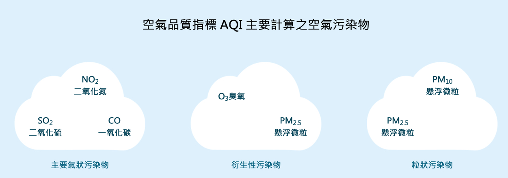<br />
</p>
<p><span class="figure-number">Figure 1: </span>空氣品質指標 AQI 主要計算之空氣污染物</p>
</div>

<p>
而根據台灣現行空氣品質指標 AQI 主要計算之空氣污染物則是以前三類為主(如圖<a href="#org77cbcfb">1</a>)，以下為這些污染物的生成機制以及侵害環境或人體的方式:<br />
</p>
<ul class="org-ul">
<li>二氧化硫(SO2)：含硫物質（例如煤、石油）在燃燒過程中與氧氣結合而成，通常產生於工業或電力業區域內。由於它有強烈刺激性，因此會影響我們的呼吸系統，或是造成過敏。二氧化硫也會與水結合形成酸雨，進而侵蝕建築物，以及溶解土壤內的金屬元素。<br /></li>
<li>二氧化氮(NO2)：除了工業產生以外，汽車也會排放以一氧化氮(NO)為主的氮氧化物，再與氧氣結合，生成二氧化氮。二氧化氮與二氧化硫的作用類似，會對呼吸系統造成傷害，並且也會與水結合形成酸雨。<br /></li>
<li>臭氧(O3)：汽車排放的氮氧化物如果受到陽光中的紫外線照射，會分離出一顆氧原子(O)，再與氧氣結合而成。它也有強烈刺激性，除了侵害我們的呼吸系統，更有可能影響神經系統，例如大腦。<br /></li>
<li>一氧化碳(CO)：如果在氧氣不足的空間（例如：燃燒許久的房間）燃燒，則一氧化碳會開始產生。由於它會極力阻礙人體內的氧氣輸送，因此如果在充滿一氧化碳的空間待太久，最後會造成昏迷甚至死亡。<br /></li>
<li>懸浮微粒(Particulate Matter)：懸浮在空氣中的微小顆粒，通常來源為道路上或營建區域的灰塵，或是工業及汽車排放而成。由於它能藉由呼吸而潛入肺臟，因此如果懸浮微粒攜帶有毒物質，會對呼吸系統造成傷害。<br /></li>
</ul>
</div>

<div id="outline-container-orga3e93e8" class="outline-3">
<h3 id="orga3e93e8"><span class="section-number-3">2.1</span> PM<sub>2.5</sub></h3>
<div class="outline-text-3" id="text-2-1">
<p>
在眾多空氣污染物類型中，最為人所熟知的大概就是PM<sub>2.5</sub>，其中PM為懸浮微粒 (Particulate Matter) 的縮寫，2.5指的則是微粒的粒徑，單位是微米 (\(\mu m\)) ，PM<sub>2.5</sub>指的是大氣中直徑小於或等於2.5微米的顆粒物，常被稱作細懸浮微粒，比頭髮直徑1/28 還小。PM<sub>2.5</sub>已被世界衛生組織所轄的國際癌症研究總署（IARC）認為是一級的致癌物，能夠產生多種的癌症，同樣屬於一級致癌物的還有如苯、石綿、戴奧辛等<sup><a id="fnr.7" class="footref" href="#fn.7">7</a></sup>。<br />
</p>


<div id="org84a61f6" class="figure">
<p>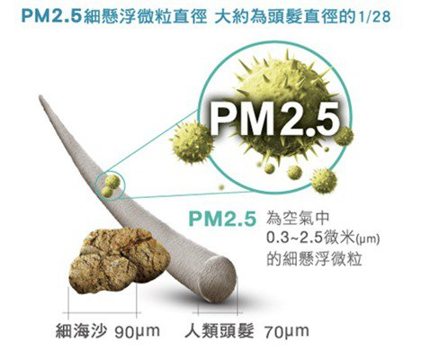<br />
</p>
<p><span class="figure-number">Figure 2: </span>PM 2.5懸浮微粒示意圖</p>
</div>

<p>
PM<sub>2.5</sub>用於通稱所有直徑小於2.5微米的空氣懸浮粒子，可以是水霧、塵埃、 花粉、皮屑、過敏原、霾等任何物質，是空氣汙染中重要的成分。事實上，「空氣汙染」這個詞即包含了兩個重要成分:廢氣(gaseous pollutants)及懸浮微粒(particulate matters, PM)。研究顯示，「霧霾」中包含了高濃度的懸浮微粒，其中小於10微米的粒子 (PM10)對人體健康比較有影響。這些懸浮粒子的致病性強弱不只由本身的大小、成分、溶解度、和產生自由基的能力來決定，更是可進一步藉著吸附空氣中的有毒物質(如:NO、臭氧、重金屬等)增加對身體的傷害<sup><a id="fnr.8" class="footref" href="#fn.8">8</a></sup>。<br />
</p>

<p>
早在 1997 年，美國環保署就首先提出要將 PM<sub>2.5</sub> 納入國家標準。在被聯邦法院否決之後，美國環保署蒐集更多 PM<sub>2.5</sub> 對人體健康有害的科學證據，終於在 2002 年成功訂定國家標準。日本不落人後，也接著跟進，訂定國家標準。有了美日的先例，我國環保署也啟動 PM<sub>2.5</sub> 國家空氣品質標準的研究，並於 2005 年完成在原有每一個空氣品質監測站增設 PM<sub>2.5</sub> 監測儀<sup><a id="fnr.9" class="footref" href="#fn.9">9</a></sup>。<br />
</p>

<p>
懸浮微粒的大小決定了它們最終在呼吸道中的位置。較大的懸浮微粒往往會被纖毛和黏液過濾，無法通過鼻子和咽喉。然而，小於10微米的懸浮微粒(PM<sub>10</sub>)卻可以穿透這些屏障達到支氣管和肺泡，而小於2.5微米的懸浮微粒則更容易吸附有毒害的物質，如重金屬（在城市中以如鋅、鉛、砷、鎘等重金屬元素最為嚴重，實際狀況則因地而異<sup><a id="fnr.10" class="footref" href="#fn.10">10</a></sup>）、有毒微生物等。由於體積更小，PM<sub>2.5</sub>具有更強的穿透力，可能抵達細支氣管壁，並干擾肺內的氣體交換。更小的微粒（直徑小於等於100奈米）甚至能通過肺部傳遞影響其他器官<sup><a id="fnr.11" class="footref" href="#fn.11">11</a></sup>。研究結果顯示長期暴露在PM<sub>2.5</sub>比正常值高 \(10\mu g/m^3\) 的環境下，日死亡率就會上升1.5% (95%信賴區間:1.1%～1.9%)<sup><a id="fnr.12" class="footref" href="#fn.12">12</a></sup>。相較於慢性阻塞性肺疾(COPD)提升3.3%日死亡率，缺血性心臟病提升2.1%日死亡率，PM2.5相關的日死亡率相當驚人<sup><a id="fnr.8.100" class="footref" href="#fn.8">8</a></sup>。<br />
</p>

<p>
根據美國環保署的研究，PM<sub>2.5</sub>可能造成的疾病可分為長期及短期影響兩類<sup><a id="fnr.13" class="footref" href="#fn.13">13</a></sup>：<br />
</p>
<ul class="org-ul">
<li>長期影響<br />
<ol class="org-ol">
<li>造成患有心臟相關疾病的人提早死亡。<br /></li>
<li>引發心血管疾病，例如造成心臟病發作、中風。<br /></li>
<li>使肺功能降低，並發展成慢性肺疾病，例如兒童氣喘。<br /></li>
<li>可能造成肺癌。<br /></li>
<li>對婦女生育的影響，例如低出生體重、胎兒死亡。<br /></li>
</ol></li>
<li>短期影響<br />
<ol class="org-ol">
<li>造成患有心臟或肺部相關疾病的人提早死亡。<br /></li>
<li>增加心血管疾病的住院或急診就醫機會，例如非致死性心臟病發作、中風。<br /></li>
<li>增加呼吸道疾病的住院或急診就醫機會，例如氣喘發作。<br /></li>
<li>增加呼吸道症狀，例如咳嗽、喘鳴、呼吸短促。<br /></li>
<li>降低兒童與肺部疾病患者的肺功能，例如患有氣喘的成人。<br /></li>
</ol></li>
</ul>

<p>
PM<sub>2.5</sub>的來源有天然與人為來源兩類，天然來源來自於自然界的沙塵、火山、海浪；但PM<sub>2.5</sub>的主要來源仍是來自人為，包含工廠、交通、焚香等等。然而除了這些常見的來源，人們每天花最多時間所在的室內空間也是PM<sub>2.5</sub> 的來源之一。《臺北市政府衛生局細懸浮微粒健康風險與預防手冊》中就指出了室內PM<sub>2.5</sub>的來源：<br />
</p>
<ol class="org-ol">
<li>燒香與燒金紙<br /></li>
<li>門前烤肉<br /></li>
<li>蚊香<br /></li>
<li>指甲油<br /></li>
<li>抽菸<br /></li>
<li>油煙<br /></li>
<li>裝潢建材<br /></li>
<li>打掃的灰塵<br /></li>
<li>外面進來的髒空氣<br /></li>
</ol>

<p>
PM<sub>2.5</sub>之所以幾乎成為空污代名詞的原因，除了它幾乎無所不在、對身體健康會造成極大危害之外，更在於它幾乎無法預防。就算緊關門窗也無法防止屋外的PM<sub>2.5</sub>進入屋內。因為PM<sub>2.5</sub>很小，遠遠小於門窗的縫隙，所以門窗根本對PM<sub>2.5</sub>毫無阻擋的能力，更有許多研究發現，居住在大馬路旁的居民會比住在公園旁的居民有更高的氣喘發作機會和心血管疾病。而一般的棉布口罩根本無法防止PM<sub>2.5</sub>的吸入，而醫療口罩也因為無法貼合臉部，無法達到有效的防止作用，只有使用N95口罩才能有效阻擋PM<sub>2.5</sub>進入肺部，但是N95口罩無法久戴，只要戴1、2個小時就會有喘不過氣的感覺，只有改善空氣品質才是唯一的解決方法<sup><a id="fnr.7.100" class="footref" href="#fn.7">7</a></sup>。<br />
</p>
</div>
</div>

<div id="outline-container-org555b8c6" class="outline-3">
<h3 id="org555b8c6"><span class="section-number-3">2.2</span> 有害空氣污染物(Hazardous air pollutants, HAPs)</h3>
<div class="outline-text-3" id="text-2-2">
<p>
除了PM<sub>2.5</sub>之外，有害空氣污染物(HAPs)也是很重要的空污議題。「有害空氣污染物」(Hazardous air pollutants, HAPs) 有時亦和「毒性空氣污染物」(Toxic air contaminants, TACs) 或「空氣毒性物質」(Air toxics) 等名詞混用，一般視為相同定義。污染物進入環境後經由暴露而影響受體(receptor);只要受體有暴露在有害空氣污染物(HAPs) 的機會，即可能影響違害健康<sup><a id="fnr.14" class="footref" href="#fn.14">14</a></sup>。<br />
</p>

<p>
針對HAPs之定義，世界各國政府有不同的認知：<br />
</p>
<ul class="org-ul">
<li>美國聯邦環保署: 任何可能或會造成癌症或其他嚴重健康影響 (如:生殖影響、生理缺陷、不良環境及生態影響等) 之空氣污染物。<br /></li>
<li>日本: 除煙霧及特定粒狀物外，可能透過長期暴露對人類健康產生不良效應之空氣污染物。<br /></li>
<li>澳洲聯邦政府: 於空氣中雖為低濃度但可能造成嚴重健康影響或環境問題之空氣污染物。<br /></li>
</ul>
<p>
雖在文字描述上有所出入，但其精神十分一致：任何可能損害人體健康的化學物質，皆可稱為有害氣污染物。<br />
</p>

<p>
對於HAPs的管制，各個國家亦有不同做法：<br />
</p>
<ul class="org-ul">
<li>美國聯邦環保署: 於1990設立「清淨空氣法(CAAA Title I, Part A, §112(b)) 」，其中明列187種有害空氣污染物(不定期檢視更新)。<br /></li>
<li>德國聯邦政府: 於「空氣品質管制技術指導手冊 (TA Luft) 」中明列約170種有害空氣污染物管制標準。<br /></li>
<li>日本環境省: 篩選248種有害空氣污染物種，並公布其中23種對人體具高度危害性物質進行優先列管。<br /></li>
<li>韓國環境部: 於「清潔空氣保護法 (Clean Air Conservation Act) 」指定35種有害空氣污染物進行特別管制。<br /></li>
</ul>

<p>
我國則是於2019年8月5日公告「第一批固定污染源有害空氣污染物種類及排放限值」，其中明列73項第一批固定污染源有害空氣污染物(HAPs)名單，大致可分為以下三類：<br />
</p>
<ol class="org-ol">
<li>有機性有害空氣污染物: 61項;如甲醛、乙醛、丁二烯、苯、苯乙烯、環氧乙烷、氯乙烯、戴奧辛等等。<br /></li>
<li>重金屬及其化合物: 8項;砷、鈹、鎘、鉛、鎳、汞、鈷、 六價鉻等。<br /></li>
<li>其他類: 4項;石綿、氟化物、聯胺、多氯聯苯等。<br /></li>
</ol>

<p>
2021年2月26日，環保署發布「固定污染源有害空氣污染物排放標準」，管制的有毒空污由最早的72項，減少為22項。對此有環保團體批評，環保署納管的速度太慢、種類太少。不過環保署表示，優先納管的22項有害物種，已可涵全國固定污染源排放的89%有害空污，未來將滾動式檢討。新制加嚴納管的22項有害空污，包含鉛、鎘等8項重金屬，以及甲苯、氯乙烯等14項揮發性有機物。以工業製程常見的苯為例，從500ppb加嚴為40ppb，加嚴幅度超過十倍。<sup><a id="fnr.15" class="footref" href="#fn.15">15</a></sup>。<br />
</p>
</div>
</div>
</div>

<div id="outline-container-orgee218c9" class="outline-2">
<h2 id="orgee218c9"><span class="section-number-2">3</span> 空氣污染的來源</h2>
<div class="outline-text-2" id="text-3">
<p>
根據環保署2016年委託雲林科技大學張艮輝教授等人進行的「強化空氣品質模式制度建立計畫（第二年）」，臺灣2010年 PM<sub>2.5</sub> 污染的貢獻來源如圖<a href="#org4cc7c0d">3</a> 所示，臺灣自身排放影響約佔66%，此也意味著臺灣 PM<sub>2.5</sub> 有 34%來自境外貢獻，其中 30%來自中國傳輸，日本及韓國分別貢獻 0.14%、0.24%，約2%貢獻來自於東亞其他國家，區域背景與海洋之影響約有2%<sup><a id="fnr.16" class="footref" href="#fn.16">16</a></sup>。<br />
</p>


<div id="org4cc7c0d" class="figure">
<p>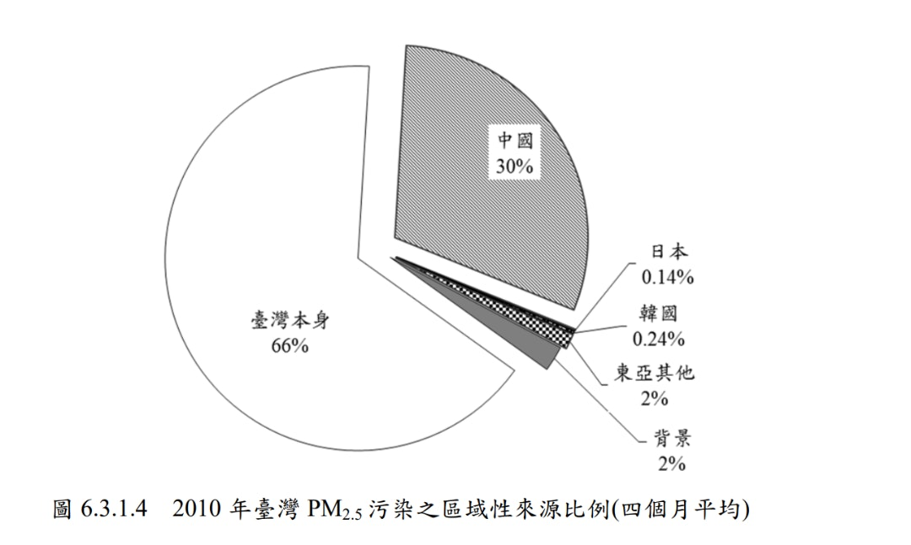<br />
</p>
<p><span class="figure-number">Figure 3: </span>2010 年臺灣 PM<sub>2.5</sub> 污染之區域性來源比例(四個月平均)</p>
</div>
</div>

<div id="outline-container-org2953e48" class="outline-3">
<h3 id="org2953e48"><span class="section-number-3">3.1</span> 境內空污</h3>
<div class="outline-text-3" id="text-3-1">
<p>
臺灣的空氣污染源約有60％～66％的霧霾成分來自境內，像是工廠營運所產生的廢氣與柴油車、汽機車排放的廢氣、營建工程所產生的細微沙塵、傳統農耕所習慣的燃燒稻草、以及焚香與鞭炮所產生的煙塵等。其中，光是各種車輛所創造的PM<sub>2.5</sub>，就佔了境內PM<sub>2.5</sub>總量的30％～37％，而電力業約佔4.5％～9.9％<sup><a id="fnr.17" class="footref" href="#fn.17">17</a></sup>。

<br />
</p>

<p>
境內空污通常發生在對流不明顯、風速微弱，且具有多重污染源的區域，例如位處冬季東北季風或偏東風的背風側且重工業發達、汽機車眾多的中南部地區。由於本地產生的污染物無法被風吹走，而且難以輸送至高空，因此污染物徘徊在原地不斷累積，形成空氣污染<sup><a id="fnr.18" class="footref" href="#fn.18">18</a></sup>。依據「空氣污染防制法」，我國對空氣污染源的定義為：「排放空氣污染物之物理或化學操作單元」，其類別如下：<br />
</p>
<ol class="org-ol">
<li>移動污染源：指因本身動力而改變位置之污染源。<br /></li>
<li>固定污染源：指移動污染源以外之污染源。<br /></li>
</ol>

<p>
1992年起環保署為改善空氣品質及調查全臺空氣污染物排放量，建立了空氣污染排放總量資料庫清冊系統（Taiwan Emission Data System, TEDS）。TEDS涵蓋的範疇為全國各地區及各行業排放量的推估，並將排放來源區分為點源、線源、面源及生物源四類，其中點源及面源即上述的固定污染，而線源即為移動污染源，每三年進行一次基準年總檢討計算，並在歷次清冊中做局部的更新<sup><a id="fnr.19" class="footref" href="#fn.19">19</a></sup>。<br />
</p>

<p>
根據環保署資料2018年的數據顯示:台灣境內PM<sub>2.5</sub>來源移動污染源佔30%至37%、固定污染源佔27%至31%、其他污染源佔32%至43%，其中固定汙染源以各種大中小型更工廠、製造業為主,電力業則占4.5%至9.9%，餐飲業占其他汙染源10.8%至12.2%<sup><a id="fnr.20" class="footref" href="#fn.20">20</a></sup>。<br />
</p>


<div id="org5a1d5c3" class="figure">
<p>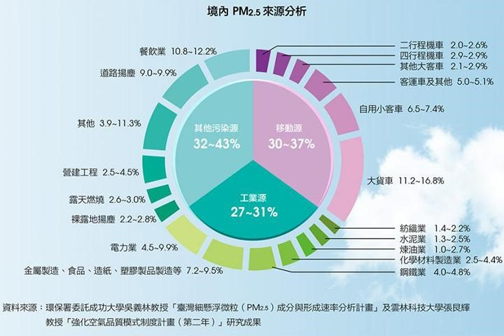<br />
</p>
<p><span class="figure-number">Figure 4: </span>臺灣境內 PM 2.5 來源分析（資料來源：台電月刊）</p>
</div>
</div>

<div id="outline-container-orgd777633" class="outline-4">
<h4 id="orgd777633"><span class="section-number-4">3.1.1</span> 移動污染源</h4>
<div class="outline-text-4" id="text-3-1-1">
<p>
移動污染源包括汽. 機車、柴油車、飛機、船舶等，近年因臺灣經濟發展迅速，人口與汽機車持續增加，導致移動源排放空氣污染物問題受社會大眾關注，而歷年的統計數據也說明移動污染為我國境內污染的主要來源。尤其都會區因人口稠密，民眾更是長期近距離暴露於移動源排放空氣污染之環境，因此，都會區移動源排放空氣污染物問題研究於全球皆受重視。相關研究顯示，汽機油車排放空氣污染物包括一氧化碳(CO)、氮氧化物(NOx)、非甲烷碳氫化合物(NMHC)<sup><a id="fnr.21" class="footref" href="#fn.21">21</a></sup>。在各種交通運輸所造成的空污中，又以老舊而排氣管制寬鬆的一、二期柴油車的排放廢氣為大宗<sup><a id="fnr.4.100" class="footref" href="#fn.4">4</a></sup>。<br />
</p>

<p>
為降低空氣污染，移動污染源的管制自然是環保署的首要任務，現行主要管制措施包含：汽油車、機車及柴油車逐期加嚴排放標準、推廣使用電動汽機車、引進潔淨車輛、獎勵檢舉烏賊車輛、補助民眾汰換低污染車輛、使用中機車排氣定檢、補助客運業更新車輛及客運業排放污染改善、改善油品品質等，藉由階段性的管制措施與多元的改善補助計畫，期能逐步降低我國汽、機車及柴油車的污染，達到污染排放減量及空氣品質提升功效<sup><a id="fnr.22" class="footref" href="#fn.22">22</a></sup>。<br />
</p>
</div>
</div>

<div id="outline-container-org761b258" class="outline-4">
<h4 id="org761b258"><span class="section-number-4">3.1.2</span> 固定污染源</h4>
<div class="outline-text-4" id="text-3-1-2">
<p>
固定污染源為非因本身動力而改變位置之污染源，包括工廠、場之煙囪排放、廠內逸散、營建施工產生之粉塵逸散、露天燃燒等。大至發電廠，小至個人使用噴霧劑，只要是會排放空氣污染物之個體，不論大小均視為固定污染源<sup><a id="fnr.23" class="footref" href="#fn.23">23</a></sup>。<br />
</p>

<p>
根據國衛院的研究，我國PM<sub>2.5</sub>的來源以及各污染源的貢獻比例依不同地區與季節而異，但主要以本地工廠、電業與交通為主要排放源。另外，寺廟與中式餐廳等周圍場域亦為PM<sub>2.5</sub>顯著污染源，綜觀全臺灣各區，高雄市、雲嘉南、中彰投空氣品質相對較差，為「急需管控之地區」。其中，高雄地區的鋼鐵製造業與交通排放貢獻逾25%的空污，應視為中央與地方政府管制之重點<sup><a id="fnr.24" class="footref" href="#fn.24">24</a></sup>。<br />
</p>

<p>
一般民眾對於空氣污染的認知可能認為污染源多來自戶外，只要乖乖待在室內即可避免空污的傷害，然而室內環境也存在各式各樣的空污來源，主要包括以下八大類<sup><a id="fnr.25" class="footref" href="#fn.25">25</a></sup>：<br />
</p>
<ol class="org-ol">
<li>室外空氣污染源: 室外的空氣可藉由自然通風或機械通風而進入室內，使室內空氣品質受到不同程度的影響，而室外的空氣污染源主要是交通運輸與工商活動所產生的空氣污染物。<br /></li>
<li>室內燃燒源:烹飪與取暖是室內最普遍的燃燒行為。來自瓦斯爐、電爐、暖爐、壁爐等設備燃燒木材、煤、油、瓦斯等產生的空氣污染物主要為一氧化碳、一氧化氮及二氧化氮。<br /></li>
<li>建材: 主要產生甲醛等揮發性有機物及極其微小的石綿纖維。室內裝潢時所用的合板與隔板，因使用含有甲醛樹脂的接合劑，會刺激皮膚及黏膜。此外，過去廣為使用的石綿瓦也是一種致癌的污染物。<br /></li>
<li>油漆及塗料: 主要產生甲醛等揮發性有機物。<br /></li>
<li>辦公室事務機: 主要產生臭氧及碳粉產生之懸浮微粒。<br /></li>
<li>清潔產品: 主要產生甲醛等揮發性有機物。使用殺蟲劑、特殊清潔劑、髮膠、油漆、立可白等用品，皆是室內揮發性有機污染物的來源。<br /></li>
<li>生物性污染物: 潮濕且不常清潔打掃的地方，如通風管路積水、天花板發霉等，容易孳生黴菌、霉菌、真菌、細菌、病毒、塵蟎等生物。<br /></li>
<li>人類活動及其他: 人類呼吸便會產生二氧化碳，而抽煙除了會釋放尼古丁、一氧化碳、二氧化碳、乙醛、丙酮、焦油等污染物質外，也是室內懸浮微粒的主要來源。此外，室內盆栽植物產生的花粉、人體或寵物掉落的毛髮、體垢及皮屑也是室內空氣污染的來源喔。<br /></li>
</ol>

<p>
而針對家庭室內空氣污染，國衛院也進一步指出「住家室內外微環境」為臺灣老年族群每日PM2.5暴露的主要環境，有高達85.2%至92.7%來自於吸菸、燒香、烹飪等活動。因此，除了較宏觀的政策改變以外，個人生活習慣的改變如戒菸、減少家中拜香枝數、增加室內通風等亦能減少特定族群的PM2.5暴露量<sup><a id="fnr.24.100" class="footref" href="#fn.24">24</a></sup>。<br />
</p>

<p>
針對固定污染管制，環保署也於2021年2月26日訂定發布「固定污染源有害空氣污染物排放標準」，優先納管22項物種，訂定包括8項重金屬及14項揮發性有機物的排放管道及周界標準，預計可納管全國固定污染源89%有害空氣污染物（HAPs）的排放量<sup><a id="fnr.26" class="footref" href="#fn.26">26</a></sup>。新制實施後，化學業、鋼鐵業、焚化爐及電廠將首當其衝，都需強化空污設備。<br />
</p>
</div>
</div>
</div>

<div id="outline-container-org810c3a5" class="outline-3">
<h3 id="org810c3a5"><span class="section-number-3">3.2</span> 境外空污</h3>
<div class="outline-text-3" id="text-3-2">
<p>
由於臺灣位於東亞大陸空氣污染物傳輸路徑上，當東北季風盛行時，常挾帶上游的空氣污染物透過長程傳輸經過臺灣地區，進而影響臺灣的空氣品質。可以根據污染的類型判斷境外污染的發源地，若是以懸浮微粒為主的境外污染其發源地則是蒙古高原、黃土高原來的，若是在境外污染時期其他的污染物濃度也有上升的趨勢(如二氧化硫、臭氧等等)，這些污染物為人為活動所產生的，所以可以推測是有經過中國沿岸的大都市，將都市的排放污染物隨著東北季風帶至台灣地區；當盛行西南風時，也可能會挾帶中國東南沿岸污染物影響臺灣，其影響程度視上游源區濃度及有無降雨而有所變化。此外，污染物會隨西南風往北傳輸，竹苗以北位於下風處，擴散條件較差，污染物較易累積<sup><a id="fnr.27" class="footref" href="#fn.27">27</a></sup>。<br />
</p>


<div id="org7acde28" class="figure">
<p>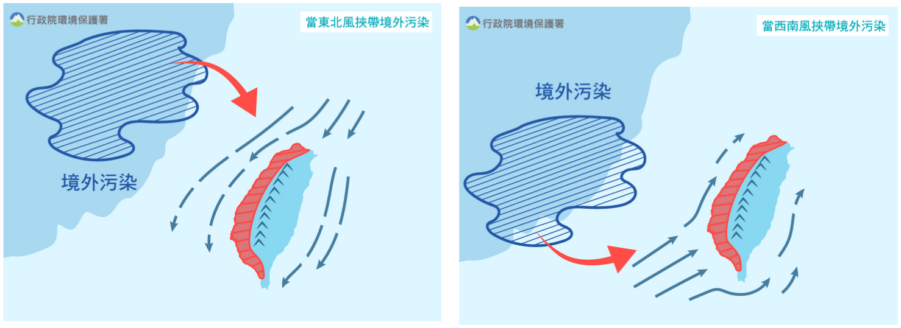<br />
</p>
<p><span class="figure-number">Figure 5: </span>我國不同季節之境外污染來源(資料來源:行政院環保署)</p>
</div>


<p>
若以境外傳輸視為基數(如圖<a href="#org1c72ad9">6</a>所示)， 則中國佔了高達 89%的貢獻比例，韓國與日本共佔約 1%，東亞其它國家與東亞背景則是共佔剩餘的 10%。此結果意味，中國排放污染物是台灣 PM<sub>2.5</sub> 污染最重要的境外傳輸來源<sup><a id="fnr.16.100" class="footref" href="#fn.16">16</a></sup>。<br />
</p>


<div id="org1c72ad9" class="figure">
<p>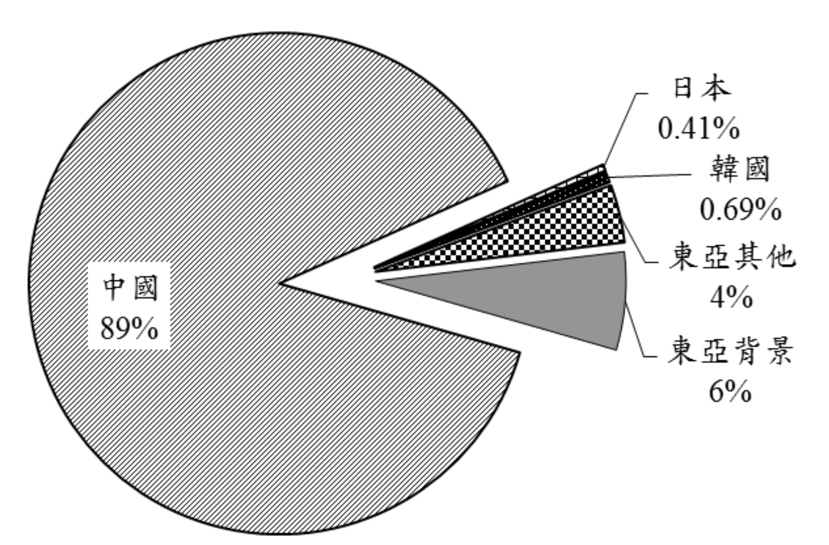<br />
</p>
<p><span class="figure-number">Figure 6: </span>2010 年臺灣 PM<sub>2.5</sub> 污染之區域性來源比例(四個月平均)</p>
</div>

<p>
在中國大陸的大城市裡，汽機車、工業生產、燃煤、工程揚塵佔了霧霾九成的污染來源<sup><a id="fnr.28" class="footref" href="#fn.28">28</a></sup>，每個不同的城市之間，霧霾成分及來源可能有些許不同，但高度發展之後的中國城市，也在滿街車輛、滿街拆舊屋蓋新樓的過程中，產生了許多對人體有害的微小物質。2015年中國媒體人柴靜發表了紀錄片《穹頂之下》，披露了中國空氣污染的嚴重問題，引發熱議，但現實生活中霾害仍然每年持續在發生，此一現象同時也讓我們理解空污問題影響的從來不會僅僅是單一國家而已，這些有害氣體及懸浮物質會隨著氣流、季風等向四周傳播，進而影響周邊地區的空氣品質。例如臺灣秋冬季便常受到來自中國華北地區的霾害侵襲。而空氣中的二氧化硫在與水汽結合後更會形成酸雨，導致動植物死亡，並侵蝕戶外藝術品和建築物<sup><a id="fnr.17.100" class="footref" href="#fn.17">17</a></sup>。<br />
</p>
</div>
</div>
</div>

<div id="outline-container-orgbdadb64" class="outline-2">
<h2 id="orgbdadb64"><span class="section-number-2">4</span> 空氣污染指標</h2>
<div class="outline-text-2" id="text-4">
<p>
釐清主要污染類型與來源為解決空污議題關鍵，另一關鍵則是準確的空氣品質指標。能精準評估空氣品質，才能有效分析比較歷年的空氣品質、進而了解空污管制的成效、研擬出有效空污的防制政策；此外，也可以作為民日常生活與自我防護的參考依據。<br />
</p>
</div>

<div id="outline-container-orgf3c9e1f" class="outline-3">
<h3 id="orgf3c9e1f"><span class="section-number-3">4.1</span> PSI</h3>
<div class="outline-text-3" id="text-4-1">
<p>
空氣污染指標（Pollutant Standards Index，PSI）是空氣污染情況的一項指標，由中華民國行政院環境保護署於1993年擴充測站後推出，目標乃藉由監控全台灣所有的空氣品質並加以通報改善<sup><a id="fnr.29" class="footref" href="#fn.29">29</a></sup>。<br />
</p>

<p>
空氣污染指標為依據監測資料將當日空氣中懸浮微粒(PM10)、二氧化硫(SO2)、二氧化氮(NO2)、一氧化碳 (CO) 及臭氧 (O3) 等5種空氣污染物濃度數值，以其對人體健康的影響程度，分別換算出不同污染物之副指標值，再以當日各副指標值之最大值為該測站當日之空氣污染指標值 (PSI)，轉化為一個由0至500的單一數字，並按照指數高低而劃分為良好、普通、不良、非常不良和有害五種級別<sup><a id="fnr.29.100" class="footref" href="#fn.29">29</a></sup>，而PSI指標分級、對健康的影響以及相對的民眾活動建議則如表<a href="#org03d8ff3">1</a>所示<sup><a id="fnr.30" class="footref" href="#fn.30">30</a></sup>。<br />
</p>

<table id="org03d8ff3" border="2" cellspacing="0" cellpadding="6" rules="groups" frame="hsides">
<caption class="t-above"><span class="table-number">Table 1:</span> 細懸浮微粒(PM<sub>2.5</sub>)指標對照表與活動建議(資料來源:環保署)</caption>

<colgroup>
<col  class="org-left" />
</colgroup>
<tbody>
<tr>
<td class="org-left">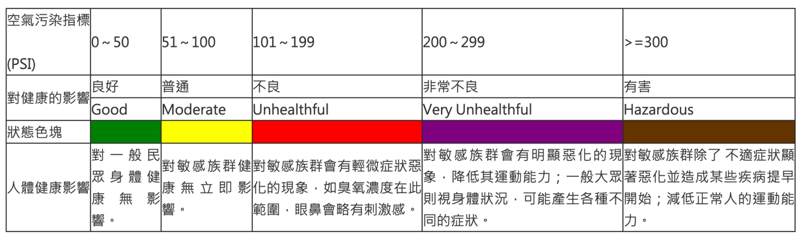</td>
</tr>
</tbody>
</table>
</div>
</div>

<div id="outline-container-org9be4ad5" class="outline-3">
<h3 id="org9be4ad5"><span class="section-number-3">4.2</span> 細懸浮微粒(PM<sub>2.5</sub>)指標</h3>
<div class="outline-text-3" id="text-4-2">
<p>
1990年歐美國家從流行病學發現懸浮微粒中有更小的粒子PM<sub>2.5</sub>，因為顆粒小鼻毛無法阻絕，隨著呼吸進入人體直達肺泡，易引發心肺疾病、腦中風、呼吸道疾病，科學研究也證實PM<sub>2.5</sub>是引發肺腺癌的主要原因之一。如果在PM<sub>2.5</sub>濃度高時外出跑步、或讓學童上體育課，咳嗽或呼吸不順暢的情況也會增加。隨後美國、日本陸續訂定PM<sub>2.5</sub>標準，二十四小時日平均值三十五微克(每立方公尺)、年平均十五微克(美國在2012年再加嚴到十二微克)<sup><a id="fnr.31" class="footref" href="#fn.31">31</a></sup>。<br />
</p>

<p>
2012年5月，環保署發布「空氣品質標準修正草案」，正式將PM<sub>2.5</sub>納入臺灣空氣品質管制並啟動標準監測<sup><a id="fnr.17.100" class="footref" href="#fn.17">17</a></sup>；2014年，環保署開始在網站上提供即時簡單易懂的細懸浮微粒(PM<sub>2.5</sub>)空氣品質指標資訊，環保署蒐集分析主要國家的空氣品質指中細懸浮微粒(PM<sub>2.5</sub>)項目，參採英國每日空氣品質指標(Daily Air Quality Index, DAQI)的細懸浮微粒(PM<sub>2.5</sub>)預警濃度分級，將指標區分為10級並以顏色示警(如表<a href="#org598fd59">2</a>)，例如當細懸浮微粒濃度達36 μg/m3(第4級)起，敏感性族群需開始注意戶外活動及身體情況，而一般健康民眾則於第 7 級(54 μg/m3)需開始注意戶外活動的強度。與現有空氣污 染指標(PSI)併行，「細懸浮微粒(PM<sub>2.5</sub>)指標」自 2014 年 10 月 1 日起實施，其即時細懸浮微粒(PM<sub>2.5</sub>)指標計算方式為0.5 × 前 12 小時平均 + 0.5 × 前 4 小時平均 (前 4 小時 3 筆有效，前 12 小時 8 筆有效)<sup><a id="fnr.32" class="footref" href="#fn.32">32</a></sup><br />
</p>

<table id="org598fd59" border="2" cellspacing="0" cellpadding="6" rules="groups" frame="hsides">
<caption class="t-above"><span class="table-number">Table 2:</span> 細懸浮微粒(PM<sub>2.5</sub>)指標對照表與活動建議(資料來源:環保署)</caption>

<colgroup>
<col  class="org-left" />
</colgroup>
<tbody>
<tr>
<td class="org-left">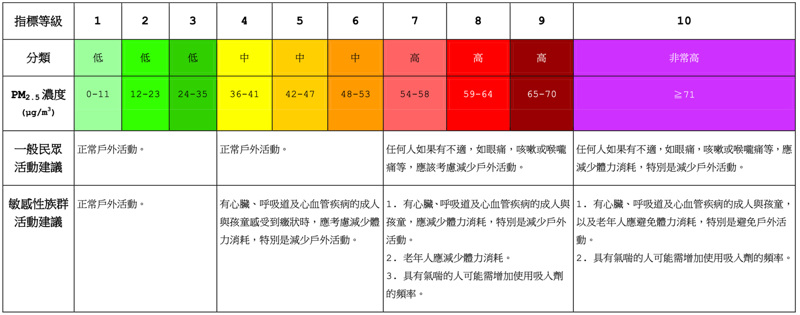</td>
</tr>
</tbody>
</table>
</div>
</div>

<div id="outline-container-orgf07cdd6" class="outline-3">
<h3 id="orgf07cdd6"><span class="section-number-3">4.3</span> AQI</h3>
<div class="outline-text-3" id="text-4-3">
<p>
舊制空汙監測分為空氣污染指標(PSI)及細懸浮微粒(PM<sub>2.5</sub>)雙指標，但兩者並存也時常發生「一邊黃燈、一邊綠燈」的相互矛盾<sup><a id="fnr.33" class="footref" href="#fn.33">33</a></sup>。2016年12月1日起環保署將原先判定大氣之空氣品質指標(PSI)更換成空氣品質污染指標(Air Quality Index, AQI,以下簡稱AQI指標)，AQI指標取代原先空氣污染指標PSI、PM<sub>2.5</sub>細懸浮微粒併陳的雙指標方式，整合PM<sub>2.5</sub>(細懸浮微粒)、新增臭氧8小時兩項目，目的在更精準判斷大氣中空氣污染物種及品質(如圖<a href="#orgcc4f2a1">7</a>)。<br />
</p>


<div id="orgcc4f2a1" class="figure">
<p>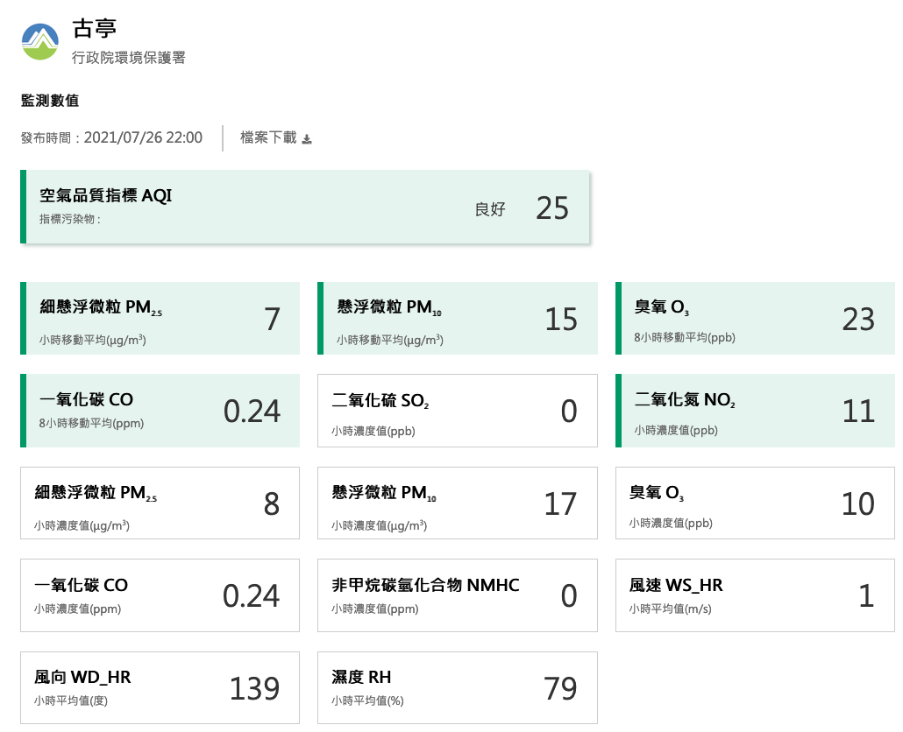<br />
</p>
<p><span class="figure-number">Figure 7: </span>AQI空氣品質指標</p>
</div>

<p>
若以AQI指標與舊式PSI指標、PM<sub>2.5</sub>指標進行比較對照，如表<a href="#orgaa80404">3</a>所示，可以看出AQI指標將空氣品質訂定更詳細、標準亦有加嚴趨勢<sup><a id="fnr.34" class="footref" href="#fn.34">34</a></sup>。<br />
</p>

<table id="orgaa80404" border="2" cellspacing="0" cellpadding="6" rules="groups" frame="hsides">
<caption class="t-above"><span class="table-number">Table 3:</span> 新舊空氣污染指標顏色分級對照表</caption>

<colgroup>
<col  class="org-left" />
</colgroup>
<tbody>
<tr>
<td class="org-left">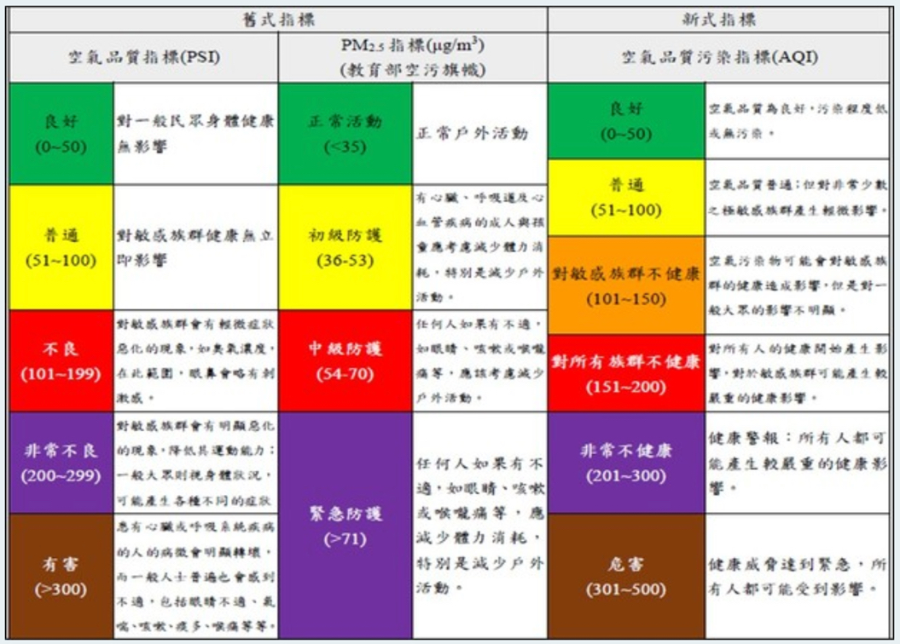</td>
</tr>
</tbody>
</table>

<p>
採用AQI指標其考量理由為空氣污染並非僅有PM<sub>2.5</sub>一項，還涵蓋了臭氧、懸浮微粒、二氧化硫、二氧化氮、一氧化碳等污染物的考量，共可分為六個等級，分別為良好(0～50，綠色)、普通(51～100，黃色)、對敏感族群不健康(101～150，橘色)、對所有族群不健康(151～200，紅色)、非常不健康(201～300，紫色)及危害(301～500，褐紅色)(如表<a href="#orga28020a">4</a>)，一旦AQI指標達到橘色(101～150)將隨時注意在戶外停留時間，一般民眾如果有不適，如眼痛，咳嗽或喉嚨痛等，應該考慮減少戶外活動，學生仍可進行戶外活動，但建議減少長時間劇烈運動，若AQI指標達到紅色(151～200)相當等於PSI指標及PM<sub>2.5</sub>指標的紅色警戒等級，避免至戶外活動<sup><a id="fnr.34.100" class="footref" href="#fn.34">34</a></sup>。<br />
</p>

<table id="orga28020a" border="2" cellspacing="0" cellpadding="6" rules="groups" frame="hsides">
<caption class="t-above"><span class="table-number">Table 4:</span> 空氣品質指標 (AQI)與活動建議</caption>

<colgroup>
<col  class="org-left" />
</colgroup>
<tbody>
<tr>
<td class="org-left">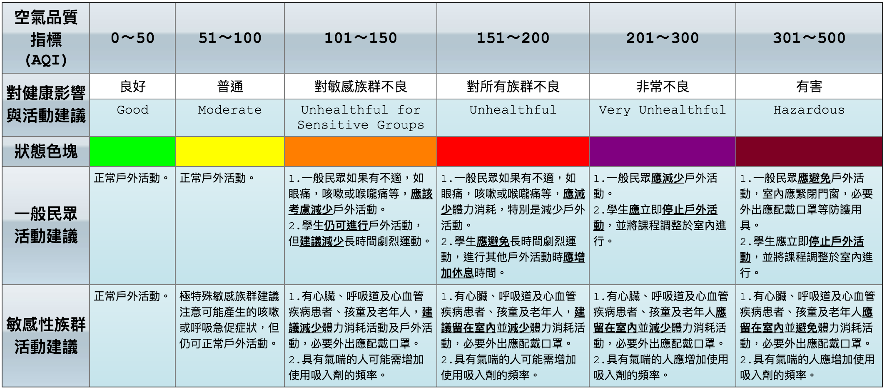</td>
</tr>
</tbody>
</table>


<div id="orga1233bd" class="figure">
<p>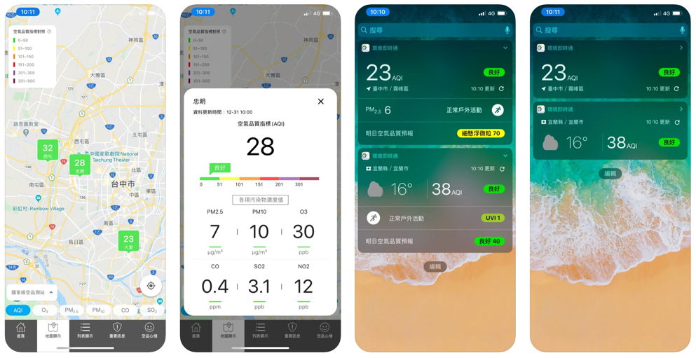<br />
</p>
<p><span class="figure-number">Figure 8: </span>手機app軟體「環境即時通」</p>
</div>

<p>
另外環保署也開發手機app軟體「環境即時通」，可透過智慧型手機安裝，並透過手機定位功能顯示出手機所在地空氣品質狀況(如圖<a href="#orga1233bd">8</a>)<sup><a id="fnr.34.100" class="footref" href="#fn.34">34</a></sup>，「環境即時通」提供使用者所在地鄰近的環境即時資訊，內容包含:環保署空氣品質、紫外線、鄉鎮天氣、河川水質及沙塵訊息，並加入中央氣象局鄉鎮天氣、豪(大)雨、低溫特報及地震報告、水保局土石流警戒及水利署淹水警戒，以及地方環保局固定污染源空氣污染物連續自動監測設施(CEMS)即時監測資料<sup><a id="fnr.35" class="footref" href="#fn.35">35</a></sup>。<br />
</p>

<p>
此外，「環境即時通」也提供自訂常用位置功能，可以透過行政區搜尋到使用者感興趣的區域，查詢當地的環境資訊；也可透過「警示設定」功能，設定個人化的空氣品質及紫外線警示通知值，當每小時監測值到達您設定門檻時，系統將主動推播訊息<sup><a id="fnr.35.100" class="footref" href="#fn.35">35</a></sup>。<br />
</p>
</div>
</div>
</div>

<div id="outline-container-orgc8f10d2" class="outline-2">
<h2 id="orgc8f10d2"><span class="section-number-2">5</span> 空氣污染的影響</h2>
<div class="outline-text-2" id="text-5">
<p>
目前空氣中的隱形殺手，除了新冠病毒，還有一直以來台灣都飽受空氣污染的侵襲，這些污染可能讓人少活2.2年！這是根據《歐洲心臟期刊》(European Heart Journal)去年的一篇文章，報告還指出，空氣污染每年造成全球880萬人過早死亡<sup><a id="fnr.36" class="footref" href="#fn.36">36</a></sup>！光是台灣燃煤發電廠的空氣污染物質排放，每年就造成約 900 件早死案例。若依目前的規劃興建新的燃煤電廠，未來早死案例將增至 1,200 件<sup><a id="fnr.4.100" class="footref" href="#fn.4">4</a></sup>。等<sup><a id="fnr.4.100" class="footref" href="#fn.4">4</a></sup>。<br />
</p>

<p>
談到空氣污染對健康的負面影響，直覺就會聯想到呼吸道不適或氣喘、引發過敏反應或肺部疾病，但其實還有很大的一個威脅，那就是引發心血管疾病，包括中風、高血壓、心臟病、心律不整等問題。事實上，因室外空氣污染所造成的死亡案例中，死於心臟疾病和中風就占了8成，其餘2成則是呼吸道疾病和癌症<sup><a id="fnr.36.100" class="footref" href="#fn.36">36</a></sup>。<br />
</p>

<p>
事實上，空氣中各種不同污染物對人體所造成的傷害也各不相同，簡單來說，二氧化硫、二氧化氮和臭氧主要對呼吸系統造成不良影響，刺激呼吸道，促使肺功能降低，因此對慢性肺疾病如氣喘、慢性支氣管炎、肺氣腫之病友有害，而心臟病者也會因肺功能的降低而受影響。至於一氧化碳因其影響人體血液氧的輸送能力，因而間接傷害心臟病者，貧血及老年人中風之病友。至於懸浮微粒的危害則與其成分及大小有關，(10M)以下的顆粒才會被吸入下呼吸道直達肺泡而造成傷害，由柴油車所排出廢氣中所含懸浮微粒可能致癌，加鉛汽油燃燒所產生之微粒則含氧化鉛，可能造成貧血，損害神經細胞及腎臟和生殖系統<sup><a id="fnr.37" class="footref" href="#fn.37">37</a></sup>。<br />
</p>

<p>
然而，空氣污染危害健康的最大罪魁禍首仍屬PM<sub>2.5</sub>，它是懸浮微粒、落塵、金屬微粒、黑煙、酸霧、油煙等的組合。因為它非常小，會隨著呼吸深入到人們的肺泡和血液中，帶著毒素循環全身，到處刺激血管壁；尤其是占PM<sub>2.5</sub>中80-90%的PM<sub>0.3</sub>(粒徑0.3微米的懸浮微粒)，更是連人類最小的細胞——直徑只有2微米(μm)的血小板都能進入<sup><a id="fnr.36.100" class="footref" href="#fn.36">36</a></sup>。以下依PM<sub>2.5</sub>對人類呼吸、心血管、神經系統三個面向進行探究<sup><a id="fnr.8.100" class="footref" href="#fn.8">8</a></sup>:<br />
</p>

<ul class="org-ul">
<li><p>
呼吸系統方面的影響<br />
</p>

<p>
PM<sub>2.5</sub>可以深入氣管、支氣管，甚至沈積在肺泡組織中。許多研究證實，空氣中懸浮微粒(特別是水溶性微粒)會在人體產生活性氧物質 (Reactive oxygen species, ROS)，並透過活化金屬產生羥基自由基，而羥基自由基是引起DNA氧化損傷的主要因素。當損傷的DNA未能及時有效修復時，便會誘導癌化或造成其他不可逆的損傷<sup><a id="fnr.38" class="footref" href="#fn.38">38</a></sup><sup>, </sup><sup><a id="fnr.8.100" class="footref" href="#fn.8">8</a></sup>。<br />
</p>

<p>
另一方面，PM<sub>2.5</sub>會造成發炎反應，刺激許多轉錄因子基因和發炎相關因子基因過度表現，導致發炎損傷<sup><a id="fnr.39" class="footref" href="#fn.39">39</a></sup>。暴露在PM<sub>2.5</sub>的環境之下，會讓氣喘、呼吸道症狀(如咳嗽)加重，導致氣喘 藥物的使用上升並增加學校的缺席率，統計顯示PM<sub>2.5</sub>會使得就醫住院比率以及肺癌死亡率上升。PM<sub>2.5</sub>會影響肺臟的發育，並且對兒童和成人的肺功能有不好的影響<sup><a id="fnr.40" class="footref" href="#fn.40">40</a></sup><sup>, </sup><sup><a id="fnr.8.100" class="footref" href="#fn.8">8</a></sup>。<br />
</p>

<p>
另外，PM<sub>2.5</sub>也有可能會導致罹患肺癌。有些族群像是原本就有心肺疾病的人、年長者或是小孩要更小心PM<sub>2.5</sub>帶來的不良影響。若是在小時候就暴露在 PM<sub>2.5</sub>的空汙環境中，就會慢性地造成肺部發展不全，最後影響到日後長期的肺功能表現<sup><a id="fnr.39.100" class="footref" href="#fn.39">39</a></sup><sup>, </sup><sup><a id="fnr.8.100" class="footref" href="#fn.8">8</a></sup>。<br />
</p></li>

<li><p>
心臟血管系統方面的影響<br />
</p>

<p>
高血壓、高血糖、高血脂，被大家廣泛稱為三高，一直都是困擾國人的健康問題。因為這些危險因子不但造成罹患心 血管疾病的機率大幅上升，所造成的代謝症候群與國內的十大死因都息息相關。長期暴露在空氣中低濃度的PM<sub>2.5</sub>將刺激血管，使血管發炎，有潛在造成血管粥狀硬化的風險。另外也可以確定發生心血管疾病的風險與暴露的PM成正相關。 根據動物實驗的結果，我們可大膽假設長期吸入PM<sub>2.5</sub>發生心血管疾病的風險在已有心血管疾病或者有危險因子(高血壓、高血脂、糖尿病、心衰竭) 的人身上會較高。小於PM2.5的粒子目前被認為對造成心血管疾病有最強的關聯性，因為它可以通過呼吸道到達最遠端的呼吸單位，以微乎其微的體積，0.5 \(\mu m\) ，進入到循環系統中<sup><a id="fnr.8.100" class="footref" href="#fn.8">8</a></sup>。<br />
</p></li>

<li><p>
中樞神經系統方面的影響<br />
</p>

<p>
空氣汙染除了對前述較為大家所知的呼吸系統及心血管系統會造成影響以外，近年來越來越多的研究指出空汙粒子也會影響到我們的中樞神經系統，造成像是阿茲海默症、巴金森氏症、失智症以及中風這些疾病發生的機會提高<sup><a id="fnr.41" class="footref" href="#fn.41">41</a></sup><sup>, </sup><sup><a id="fnr.42" class="footref" href="#fn.42">42</a></sup><sup>, </sup><sup><a id="fnr.8.100" class="footref" href="#fn.8">8</a></sup>。<br />
</p>

<p>
發炎反應與中樞神經系統病變的形成有關係，而那些被我們吸入的空污粒子被認為是其中一個很大的原因，其造成的氧化壓力會對我們的腦細胞造成老化、突變甚至死亡。目前推測可能的路徑有<sup><a id="fnr.43" class="footref" href="#fn.43">43</a></sup><sup>, </sup><sup><a id="fnr.8.100" class="footref" href="#fn.8">8</a></sup>:<br />
</p>
<ol class="org-ol">
<li>經由嗅球(Olfactory bulb)直接進入腦 部造成神經細胞損傷;<br /></li>
<li>影響鼻黏膜上 皮造成發炎而破壞腦部;<br /></li>
<li>吸入到肺裡 使肺部發炎釋放會傷害腦部的細胞激素。<br /></li>
</ol></li>
</ul>

<p>
除上逑三類主要影響，PM<sub>2.5</sub>對人體還可能造成以下危害或疾病<sup><a id="fnr.44" class="footref" href="#fn.44">44</a></sup><br />
</p>
<ol class="org-ol">
<li>人體可能產生各式發炎反應<br /></li>
<li>增加罹患慢性腎臟病的風險<br /></li>
<li>增加罹患卵巢癌的風險<br /></li>
<li>容易導致三高機率增加<br /></li>
<li>可能提高流產機率<br /></li>
<li>可能降低受孕機率<br /></li>
<li>懷孕期間長時間暴露容易導致早產<br /></li>
</ol>

<p>
根據研究，PM<sub>2.5</sub>對於台灣人整體死亡負擔重要危險因子中，已排名第四<sup><a id="fnr.44.100" class="footref" href="#fn.44">44</a></sup>。每年超過 8000 人因長期暴露於PM<sub>2.5</sub>中失去性命，其中2/3的人更是提早死亡的。<br />
</p>
</div>
</div>

<div id="outline-container-orgcdd8d76" class="outline-2">
<h2 id="orgcdd8d76"><span class="section-number-2">6</span> 空氣污染的防制</h2>
<div class="outline-text-2" id="text-6">
<p>
對每個國家而言，空污防制皆是一個漸進的過程，其防制成效或許難以立竿見影，但各國政府無不提出各種因應策略以求提升該國空氣品質，而其中或有臺灣可借鑑之處。<br />
</p>
</div>

<div id="outline-container-orgad3b096" class="outline-3">
<h3 id="orgad3b096"><span class="section-number-3">6.1</span> 各國的空污防治策略</h3>
<div class="outline-text-3" id="text-6-1">
</div>
<div id="outline-container-org290af67" class="outline-4">
<h4 id="org290af67"><span class="section-number-4">6.1.1</span> 美國</h4>
<div class="outline-text-4" id="text-6-1-1">
<ul class="org-ul">
<li><p>
淨化空氣法案<br />
</p>

<p>
1948年10月，美國賓州多諾拉發生一起嚴重的空氣污染事件(多諾拉事件)，該事件導致20餘人在一周內死亡，近6000人（約占當地居民的43％）感到不適，被認為是「美國歷史上最嚴重的空氣污染災難之一」。美國自從多諾拉事件後開始意識到空氣污染對人體所能造成的傷害程度，為了解決污染問題，1970年聯邦政府首次頒布了《清潔空氣法案》，對每一種空氣污染物都規定了最高限度<sup><a id="fnr.45" class="footref" href="#fn.45">45</a></sup>。「清潔空氣法案」（Clean Air Act）主要策略有二<sup><a id="fnr.46" class="footref" href="#fn.46">46</a></sup>:<br />
</p>
<ul class="org-ul">
<li><p>
棍子：執法趨嚴、造假加倍奉還<br />
</p>

<p>
首先在棍棒方面，排污有價，造假重罰。美國管理空污秉持自主管理，政府設好標準，希望企業自主防制，但若抓到申報資料造假，會有罰金和兩年刑責，若累犯，罰金還會加倍。美國近年更提高罰則。2016年，環保署將空污罰款上限調高近3倍，從約新台幣110萬元調漲到290萬元，顯示隨時代進步，執法加嚴是趨勢。<br />
</p></li>
<li><p>
胡蘿蔔：排放權售價比空污費高<br />
</p>

<p>
成大永續環境實驗所助理研究員簡聰文研究指出，美國於70年代推動空污總量管制和排放量交易，分階段逐年減量，減排額度可進入市場販售，但若超量排放，超出部份空污費率則增為30倍以上。此做法為減排創造了經濟誘因，因為超排成本遠高於防制設備成本。如果願意汰換鍋爐或增設防制設施，沒用到的排放權還可賣錢。<br />
</p></li>
</ul>

<p>
美國此法案實施50年來成績顯著，空污物降低超過7成。<br />
</p></li>

<li><p>
美國跨州空氣污染規範<br />
</p>

<p>
空氣污染跨境問題本身相當具有複雜性，美國為了達到2008年修訂的室外空氣品質標準（National Ambient Air Quality Standards, NAAQS），即開始研擬「跨州空氣污染規範」(Cross-State Air Pollution Rule, CSAPR)<sup><a id="fnr.47" class="footref" href="#fn.47">47</a></sup>，來解決空氣跨境污染的問題。該規範鎖定火力發電廠的跨境污染問題；美國燃煤火力發電比例高達40%，而燃氣亦高達25%左右，這些電廠造成某些州其州內與跨州嚴重之空污負擔，但其所造成的負外部性經常只針對管轄州來計算而低估，受影響州卻無法對其課責進而改善污染<sup><a id="fnr.48" class="footref" href="#fn.48">48</a></sup>。<br />
</p>

<p>
2016年最新的跨州空氣污染更新規範（Final Cross-State Air Pollution Rule Update）處理東岸地區夏季（五到九月）臭氧與氮氧化物跨州污染的情況，協助位處下風處的各州符合國家空氣品質標準。此法案通過後，將影響美國22個州，886座電廠中的以煤炭、天然氣及燃油作為能量來源的2,875座發電機組。此污染細則係奠基在美國淨化空氣法案（Clean Air Act）的友鄰條款（&ldquo;good neighbor&rdquo; provision）要求美國環保署與各州處理跨州的空氣污染問題，其特別要求各州必須提出乾淨空氣法案實行計畫（State Implementation Plan, SIP）來管制自身的排放，特別是會使得下風處各州無法達到國家空氣標準的污染排放。若各州在實施上有窒礙難行之處，環保署得以聯邦執行計畫（Federal Implementation Plan, FIP）介入管制<sup><a id="fnr.48.100" class="footref" href="#fn.48">48</a></sup>。<br />
</p>

<p>
美國環保署更設計了一個四步驟的政策框架，來協助跨州空氣污染的評估與管制。首先，確定下風處州受到其他州空污傳影響無法達到美國的空氣標準；第二，確定哪些上風處州造成下風處州的空氣污染問題；第三，量化出可達成的排放減量措施並分配上風處各州的責任配額；最後，採用聯邦執行計畫，透過區域排放交易計畫（Emissions trading programs），利用相關資源來減少上風處州排放量<sup><a id="fnr.49" class="footref" href="#fn.49">49</a></sup><sup>, </sup><sup><a id="fnr.48.100" class="footref" href="#fn.48">48</a></sup>。<br />
</p></li>
</ul>

<p>
1970年至今，美國的人口、能源消耗與GDP都大幅成長，但在此同時，六種主要污染物總排放量卻降低了73％（如圖<a href="#org06ac602">9</a>)，足見其防制成效<sup><a id="fnr.46.100" class="footref" href="#fn.46">46</a></sup>。<br />
</p>


<div id="org06ac602" class="figure">
<p>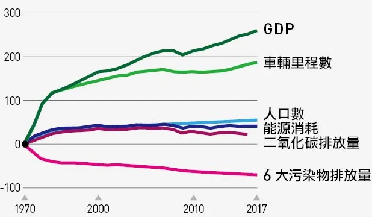<br />
</p>
<p><span class="figure-number">Figure 9: </span>美國1970-2017人口、GDP以及各項污染趨勢</p>
</div>
</div>
</div>

<div id="outline-container-org3e2e1cd" class="outline-4">
<h4 id="org3e2e1cd"><span class="section-number-4">6.1.2</span> 日本</h4>
<div class="outline-text-4" id="text-6-1-2">
<p>
日本基於環保與健康考量，依據 2001 年日本國內頒行之《自動車 NOx・PM 法》，日本國土交通省設立本項以稅收平衡考量原則下之稅收 制度，稅制之基本理念在於，對於環境污染負荷較大之機動車輛採取重課稅，環境負荷較小之機動車輛採取輕課稅的全面性自動車綠色特別稅收制度。而在本項綠色特別稅中，明定不論汽油車、柴油車，皆適用其 NOx 等有害物質排放標準之應用，並同時利用 CO2 排放量作為實行課稅等級之劃分條件，另亦針對從新車登記起使用一定年限後之車輛實行汽車加重課稅，藉以加速老舊車輛淘汰<sup><a id="fnr.50" class="footref" href="#fn.50">50</a></sup>。<br />
</p>

<p>
日本綠色特別稅之實行重點在於，對 於排放性能及耗油量表現較優良且對環境負荷小之汽車可減輕其汽車稅，並於當車輛抵達一定使用年限後，認為其對於環境負荷較大，因而加重其稅率以運用於維持當地環境保護，以及加速其車輛汰換，車輛加重稅率之規範如下:<br />
</p>
<ol class="org-ol">
<li>車齡超過11年之柴油車，<br /></li>
<li>車齡超過13年之汽油車、 LPG 車，<br /></li>
</ol>
<p>
上述車輛每年將加重 15%之稅率，若車種類型為公共汽車及卡車者，則為加重10%稅率<sup><a id="fnr.50.100" class="footref" href="#fn.50">50</a></sup>。<br />
</p>
</div>
</div>

<div id="outline-container-orgce114f4" class="outline-4">
<h4 id="orgce114f4"><span class="section-number-4">6.1.3</span> 新加坡</h4>
<div class="outline-text-4" id="text-6-1-3">
<p>
新加坡奉行鼓勵國民使用公共交通工具、減少私人運具使用之政策， 以此為目的施行使用車輛者必須支付道路稅之策略。繳付道路稅之目的 在於減少車輛使用並使民眾使用具有較低污染之各種環保運行車輛，因此，在規範中明訂各式車輛必須每半年或每年配合車輛檢驗時繳交道路稅，而車輛檢驗則會依據車種、車齡之不同決定檢驗頻率。<br />
</p>

<p>
此外，新加坡政府認為，較老舊之車輛可能更具有環境污染性，且易產生頻繁故障現象而對其他道路使用者造成不便，為了加強汰換老舊車輛，規範所有車齡超過 10 年之車輛均需額外支付道路附加稅，當該車輛之車主每次牌照更新時，將需額外支付 10%-50%間之附加稅，並每年以 10%比例增加，最高加收至 50%<sup><a id="fnr.50.100" class="footref" href="#fn.50">50</a></sup>。<br />
</p>
</div>
</div>

<div id="outline-container-orgf043b83" class="outline-4">
<h4 id="orgf043b83"><span class="section-number-4">6.1.4</span> 瑞士</h4>
<div class="outline-text-4" id="text-6-1-4">
<p>
瑞士空氣品質名列前矛，但仍實行嚴格的汽車排放標準。首先是瑞士方便的大眾交通系統，搭電車的人佔32%，26%的人使用汽車或是電動摩托車，42%的人騎自行車或是步行。瑞士所傳遞的訊息是：「我們很歡迎你到這個城市來，但不歡迎你開車來。」<sup><a id="fnr.51" class="footref" href="#fn.51">51</a></sup><br />
</p>

<p>
不只不歡迎開車族，瑞士還拒絕F1賽車進駐，更是歐洲最早使用汽車尾氣淨化裝置的國家，並且規定從2015年起，所有汽車行駛每公里，只允許排放150克的CO2，這樣的標準是歐洲最嚴格的，不僅如此這個位於瑞士和義大利邊境的山城，策馬特而這個更是公投決定，禁止汽車進入。為了保護天然資源、維護空氣品質，沒有人抱怨不方便，觀光客依舊絡繹不絕。<sup><a id="fnr.51.100" class="footref" href="#fn.51">51</a></sup><br />
</p>
</div>
</div>

<div id="outline-container-org41ab23e" class="outline-4">
<h4 id="org41ab23e"><span class="section-number-4">6.1.5</span> 巴黎</h4>
<div class="outline-text-4" id="text-6-1-5">
<p>
法國巴黎為改善空氣品質，持續進行宣導將車輛依不同期別 (污染 程度)發放給車主 6 種不同顏色標籤 (綠、紫、黃、澄、褐、灰);而在巴 黎地區，相關當局在空氣污染物排放量評估上認為，有 73%的 NOx 及將 近 40%的粒狀污染物排放，主要是受到移動污染源的貢獻，因此針對移 動污染源所造成的空氣污染狀況，巴黎理事會會議認為，應該通過車輛 使用更清潔之燃料以及限制高污染車輛行動相互配合方式，才能使巴黎 逐步達成 2020 年全面取代高污染車輛之目標<sup><a id="fnr.50.100" class="footref" href="#fn.50">50</a></sup>。<br />
</p>

<p>
2017 年 1 月，巴黎市政府正式公布車輛污染程度標籤限行區制度 (Zone de Circulation Restreinte，ZCR)，表明在 2017 年 1 月 16 日開始，除緊急救 護車輛及因特殊需求得以事前申請免貼標籤者外，所有不論是否為巴黎 市內的居民，凡進入巴黎市區內之所有機動車輛 (包含機車或是外國車 輛)，皆必須在檔風玻璃上黏貼環保標籤;若進入市區者未張貼該標籤， 則巴黎政府之警察單位有權將其車輛攔截或進行罰款<sup><a id="fnr.50.100" class="footref" href="#fn.50">50</a></sup>。<br />
</p>
</div>
</div>

<div id="outline-container-org4fa6dfa" class="outline-4">
<h4 id="org4fa6dfa"><span class="section-number-4">6.1.6</span> 英國</h4>
<div class="outline-text-4" id="text-6-1-6">
<p>
英國是先受到空氣污染侵襲的國家之一，工業化時期大量有害氣體沒有經過處理就直接排到空氣中。倫敦一年將近有90天被煙霧籠罩，很多人患上支氣管炎、冠心病、肺結核甚至癌症，空氣污染的危險性可見一斑。1956年，英國首次頒布《清潔空氣法案》，主要減少煤炭用量，同時政府大規模改造城市的傳統爐灶；20世紀80年代，政府提倡綠色出行要求新車必須裝有催化劑減少尾氣排放，並倡導自行車交通；2001年倫敦市頒布了《空氣品質戰略草案》，擴大綠化面積建設「空中花園」，同時在樓頂製造雨水貯存系統建立能源可持續<sup><a id="fnr.45.100" class="footref" href="#fn.45">45</a></sup>。<br />
</p>

<p>
倫敦在2003年開始實施塞車稅，前倫敦市副市長佳芙蓉：「我們成功減少了30%的車輛，進入這個區域(市中心)，大幅度的減少了塞車狀況，他們轉搭巴士，也有人改騎腳踏車，更多人用步行的方式替代。」十年後，倫敦政府開始鎖定柴油車，只要是進市區的柴油車，就得繳交11.5英鎊的空氣清潔費<sup><a id="fnr.51.100" class="footref" href="#fn.51">51</a></sup>。<br />
</p>

<p>
2016 年 10 月英國推出國家層級之空品淨區相關框架與執行辦法，主要限制 NO2 及粒狀污染物排放，並預計以達成新車 2040 年零排放以 及全體車輛 2050 年零排放之目標。法案中亦明訂將授權各地方政府在 符合該法框架之下，可自行依據地區適合方式進行不同分類下之車輛管 理，並將其區分收費或不收費之空品淨區。針對不收費之空品淨區，其 規範係指用於改善地區空氣品質行動，管制方式可使用發放進出入許可 證或提高地區車輛排放標準等;收費之空品淨區規範則應為，如果駕駛 不符合該區域之車輛排放進出入類型特定標準者，車主必須支付進入該 空品淨區之費用。<sup><a id="fnr.50.100" class="footref" href="#fn.50">50</a></sup><br />
</p>
</div>
</div>

<div id="outline-container-orgd1fbdc4" class="outline-4">
<h4 id="orgd1fbdc4"><span class="section-number-4">6.1.7</span> 德國</h4>
<div class="outline-text-4" id="text-6-1-7">
<p>
1974年德國提出《聯邦污染防治法》，主要約束大型工業類企業排放標準，限制或關停鍋爐和工業設備，空氣治理得到了一定的效果<sup><a id="fnr.45.100" class="footref" href="#fn.45">45</a></sup>。2006年，德國為配合歐盟相關的運輸政策制定「聯邦防治法」第 35 條，於 2007 年開始實行，該法案針對德國境內大型都市、內部城市和交通流量大的城市設置「環保區」 (Environmental Zone)，針對上述都市內部的汽機車等移動性汙染源進行廢氣排放量的控管。環保區的設立即是利用獎勵的方式鼓勵民眾藉由加裝觸媒轉換器以改善廢氣排放量，政府將汽車廢氣排放分為四級，以標誌 貼紙顏色來區分，見表<a href="#orgd3d505d">5</a>，「歐4」綠色貼紙，為最高等級，可自由進出各環保區，其餘顏色貼紙的汽車等級能進出環保區的時間 僅到 2010 年，之後所有要進出環保區的汽車均須改善廢氣排放量至「歐4」的等級<sup><a id="fnr.52" class="footref" href="#fn.52">52</a></sup>。<br />
</p>

<table id="orgd3d505d" border="2" cellspacing="0" cellpadding="6" rules="groups" frame="hsides">
<caption class="t-above"><span class="table-number">Table 5:</span> 德國汽車進出環保區辨識貼紙顏色</caption>

<colgroup>
<col  class="org-left" />
</colgroup>
<tbody>
<tr>
<td class="org-left">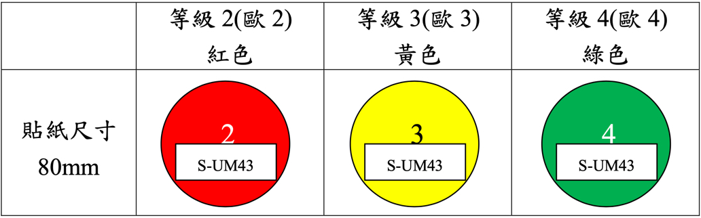</td>
</tr>
</tbody>
</table>

<p>
2011年總理梅克爾宣示，在 2020 年要達到100萬輛電動車上路的目標，作為「零碳經濟」的重要里程碑之一。然而，至2018年德國仍只有20多萬輛油電混合與純電動車，目前僅不到3萬輛電動車奔馳在德國的道路上。究其原因有二，一為電動車公共充電站的數量不足、二為電動車高昂的價格<sup><a id="fnr.53" class="footref" href="#fn.53">53</a></sup>。<br />
</p>

<p>
為回應1997年歐盟所簽訂的「京都議定書」，德國聯邦政府在 2007 年發佈「能源與環保規範計劃」，宗旨是有效抑制溫室效應造成全球暖化的威脅，目標是以創新能源科技來降低二氧化碳廢氣排放值，預計將新制定十四條法案或命令，最快在 2009 年完成大部分法案，至 2020 年全面施行，達成德國的二氧化碳排放值下降幅度比 1990 年標準下降至 40%的最終目標，等於減少 2.2 億公噸的二氧化碳，該方案未來可能促使歐盟也提升標準，二氧化碳減量於30%。「能源與環保規範計畫」主要是透過八項措施來達成，分別為:擴大熱電混合系統的使用、加強環保觀念、應用新能源發電科技、廢除儲熱式電暖器的使用、推廣居家環保使用替代能源、優惠環保汽車稅、飛航與船運的規範與對產業的規範<sup><a id="fnr.52.100" class="footref" href="#fn.52">52</a></sup>。<br />
</p>
</div>
</div>
</div>

<div id="outline-container-org096d624" class="outline-3">
<h3 id="org096d624"><span class="section-number-3">6.2</span> 台灣的空污防治政策與目標</h3>
<div class="outline-text-3" id="text-6-2">
</div>
<div id="outline-container-org9b68746" class="outline-4">
<h4 id="org9b68746"><span class="section-number-4">6.2.1</span> 空氣污染防制法</h4>
<div class="outline-text-4" id="text-6-2-1">
<p>
「空氣污染防制方案」為我國空污防制最主要的法案，也代表政府對空污防治的大致方向，其重點如下<sup><a id="fnr.54" class="footref" href="#fn.54">54</a></sup>:<br />
</p>
<ul class="org-ul">
<li>固定污染源管制<br />
<ol class="org-ol">
<li>許可及燃料使用管理制度：修正《固定污染源設置操作及燃料使用許可證管理辦法》，建立許可證審查全國一致性原則、落實資訊公開及公民參與。<br /></li>
<li>推動主要污染源實質減量：持續執行國營事業空污減量盤點與鍋爐改善工作，透過使用燃料種類改變或強化後端防制設備技術，強化空氣污染物減量。<br /></li>
<li>強化連續自動監測設施管制：評估新增連線管制對象，持續檢討修正《固定污染源空氣污染物連續自動監測設施管理辦法》，新增數據處理系統(DAHS)封存與查核比對機制，以提升連線數據品質，強化防弊查核措施。<br /></li>
<li>空氣污染防制費季節性差別費率：滾動式檢討修訂空氣污染防制費相關法規，研修空氣污染防制費收費費率，以強化污染減量經濟誘因，鼓勵公私場所自願調整產能，降低污染排放。<br /></li>
</ol></li>
<li>移動污染源管制<br />
<ol class="org-ol">
<li>加速機車汰舊換新：109年起針對淘汰96年6月30日前出廠老舊機車換購電動二輪車或符合7期排放標準的燃油機車者提供補助，並將具高污染潛勢的機車列為管制重點，強力稽查與路邊攔檢，加速高污染機車退場。<br /></li>
<li>改善柴油車污染排放：補助1至3期大型柴油車調修、加裝空氣污染防制設備、汰舊換新、提供低利信貸及利息補貼，並配合財政部減徵貨物稅及關稅；另推動柴油車定期檢驗。<br /></li>
<li>港區運輸管制：修正《移動污染源燃料成分管制標準》，並增訂船舶燃油成分管制標準硫含量最大值。另提升高壓岸電使用率、評估各港增建岸電設施並研擬徵收船舶空氣污染防制費。<br /></li>
<li>市區公車電動化：持續由交通部整合各部會補助資源，辦理補助客運業者購置電動公車。<br /></li>
</ol></li>

<li>逸散污染源管制<sup><a id="fnr.54.100" class="footref" href="#fn.54">54</a></sup><br />
<ol class="org-ol">
<li>塗料揮發性有機物管制：訂定《建物及工業維護塗料揮發性有機物成分標準》，優先針對市售之建物及工業維護塗料進行管制，持續推動降低消費性產品之揮發性有機物排放量。<br /></li>
<li>餐飲業油煙管理：訂定《餐飲業空氣污染物防制設施管理辦法》，針對一定規模餐飲業，以公告指定方式納管；連鎖早餐店等中小型餐飲業則以輔導其增設油煙防制設備等方式辦理。<br /></li>
<li>露天燃燒行為管制：持續推動紙錢集中焚燒與金爐加裝空氣污染防制設施，並宣導環保祭祀觀念。另推廣農業廢棄物多元去化或再利用管道，補助農民施用有機質肥料，以減少農廢露天燃燒。<br /></li>
</ol></li>
</ul>

<p>
臺灣自立法進行空污防制以來，確實達到一定成效。以環保署整理103年世界衛生組織及環保署監測數據之數據為例，103年臺灣PM<sub>2.5</sub>年平均濃度為23.5μg/m3，與韓國相當。若將城市個別拉出比較，更可看到臺北市PM<sub>2.5</sub>平均濃度為17.7μg/m3，約與新加坡相近（實測值17μg/m3），較首爾為佳（推估值22.5μg/m3）；而高雄市PM<sub>2.5</sub>平均濃度為29.4μg/m3，約與威尼斯相近（實測值30μg/m3）。在政府、企業與民間合心協力下，105年全臺PM<sub>2.5</sub>之平均值已降到20μg/m3，更預計於108年降至18μg/m3，這些實質改變讓大家更有信心，身體力行減排措施，走向更乾淨、健康的未來<sup><a id="fnr.17.100" class="footref" href="#fn.17">17</a></sup>。<br />
</p>
</div>
</div>

<div id="outline-container-org7987749" class="outline-4">
<h4 id="org7987749"><span class="section-number-4">6.2.2</span> 台灣空污防制政策發展革</h4>
<div class="outline-text-4" id="text-6-2-2">
<p>
我國的空污防治政策發展歷沿革如下所述<sup><a id="fnr.55" class="footref" href="#fn.55">55</a></sup>：<br />
</p>

<ol class="org-ol">
<li>1975年，我國制定《空氣污染防制法》，管制懸浮微粒(PM10)、臭氧、硫氧化物、一氧化碳等污染物。在空氣品質的監測上，1980年，政府設立空氣品質監測站，1993年，完成全國空氣品質監測站網的設置，當時環保署空氣品質監測站的監測項目包含粒徑小於等於10微米的懸浮微粒(PM10)、二氧化氮(CO2)、一氧化氮(CO)、氮氧化物(NOx)、臭氧(O3)等污染物，爾後，更以2.5微米的懸浮微粒(PM2.5)做為檢測與防治的目標。<br /></li>
<li>2005年，環保署開始進行細懸浮微粒的監測，而對細懸浮微粒的管制，主要是根據臺大公衛學院的「PM2.5空氣品質標準研訂三年計劃」，再根據此報告來制訂管制計畫。然而，2005年，我國雖然已開始進行細懸浮微粒的監測，但由於PM2.5管制牽涉到我國能源、石化與鋼鐵多項產業，影響能源與經濟層面甚鉅，因此，政府決策模式頗有疑慮，在缺乏中央決策依據下，並沒有訂出管制標準與管制時間表，直至在反國光石化運動如火如荼的推動下，前總統馬英九在其「黃金十年」的規劃中，承諾民眾並要求環保署即刻訂定管制標準。<br /></li>
<li>為配合民間環保的需求，在前總統馬英九的「黃金十年」政綱制訂中，因而包含全國「空氣污染物涵容總量管理計畫」，2012年5月，公告我國PM2.5的管制規範標準，且將標準值訂為年平均15μg/m3、日平均35μg/m3。2013年，增設手動監測方式，2014年，公布細懸浮微粒管制計劃，隨後又因空污問題的嚴重、加上許多流行病學的報告顯示，2015年4月，環保署啟動了「空氣污染減量行動督導聯繫會報」，同年8月，再提出「清淨空氣行動計畫」，並以2020年時，讓懸浮微粒(PM2.5)達到15μg/m3的規劃目標。<br /></li>
<li>2016年5月，政黨輪替，民進黨針對國民黨版本的「清淨空氣行動計畫」提出了「修正計劃」，同年11與12月進行《空氣品質嚴重惡化緊急防制辦法》修正草案，以及實施空氣品質AQI(Air Quality Index)指標，2017年，再推出最新的「14+N」空污防制措施。<br /></li>
</ol>

<p>
在空氣品質的監測上，我國於1980年開始設立空品監測站，1993年完成空品監測，2005年自動監測站建置完成，而「空氣污染排放清冊」(Taiwan Emission Database,TEDS9.0)版則是以2013年的活動量為基準所進行的推估，以1平方公里網格排放量的空間解析，達到管制上實用的程度，並以2020年平均達15μg/m3改善為目標，但事實上，政府並沒有任何的政策工具或施政模式作為回應。2017年，政府為了更聚焦改善空污，以「14+N」空污防制策略作為回應民間訴求及議題對焦，但改善的成效預計在2019年達18μg/m3，唯其與2012年所提及的改善結果不同，亦即與在2020年預計達15μg/m3仍有一段差距，顯示政府防污政策的職能不彰<sup><a id="fnr.55.100" class="footref" href="#fn.55">55</a></sup>。<br />
</p>

<p>
依據行政院 106 年 4 月 13 日核定「14+N 空氣污染防制策略」，交通部亦積極配合響應，與環保署協力改善國內空氣品質。其策略包含由交通部主導之港區運輸管制、提升公共運輸使用人次、提升軌道貨運運能等措施，主辦項目包含提升船舶進出港減速達成率、研擬劃設船舶硫排放控制區、提供公車營運虧損補助、補助汰換老舊柴油公車及電動公車、鼓勵業者自備鐵路貨櫃車等工作;以及由環保署主辦的淘汰 一、二期柴油大貨車，三期柴油車加裝濾煙器，以及汰除二行程機車等措施，於其中交通部亦協助辦理環保署進行車籍資料介接、辦理機車切結報廢等工作，根據環保署提供報告，截至 106 年 10 月底為止，淘汰大型柴 油車之目標達成率為 43.34%，二行程機車淘汰目標達成率為 66.51%，且針對大貨車貨物稅減免之增訂條例已提供立法院審議，上述皆顯示各項針對移動污染源之策略及改善目標，都已積極推動執行中<sup><a id="fnr.50.100" class="footref" href="#fn.50">50</a></sup>。<br />
</p>
</div>
</div>

<div id="outline-container-org1820847" class="outline-4">
<h4 id="org1820847"><span class="section-number-4">6.2.3</span> 台灣空污目標之演進</h4>
<div class="outline-text-4" id="text-6-2-3">
<p>
有關政府的空污政策改善策略目標及演進過程，可從2015-2017年的政策改變中來加以說明<sup><a id="fnr.55.100" class="footref" href="#fn.55">55</a></sup>:<br />
</p>
<ol class="org-ol">
<li><p>
推動「清淨空氣行動計畫」<br />
</p>

<p>
2015年，政府推動「清淨空氣行動計畫」、2016年修正並推動「清淨空氣行動計畫修正計畫」、2017年，推動「空氣污染防制策略」，並進行空污政策的檢視與盤點。另外，針對三大改善時程依序進行改善策略目標及預期效益總覽，再依據固定污染源、移動污染源及其他污染源，這三大類別中幾項重要的政策作為討論。<br />
</p>

<p>
其中，「清淨空氣行動計畫」主要是強化的措施，並以推動二輪車、電動公車等電動運輸，以及柴油車加裝濾煙器、推動飯店使用天然氣鍋爐為重點；而在「清淨空氣行動計畫修正計畫」中，主要重點則是防制及掃除煙塵、鍋爐燃料的改變及改變燒香、金紙等民俗活動，至於「空氣污染防制策略」主要是對於空污的改善及減量成效策略措施，同時也開始列出固定污染源、移動污染源，以及其他污染源等細項種類的改善策略及預期效益，也讓空污政策的目標逐漸明確。<br />
</p></li>
<li><p>
固定污染源<br />
</p>

<p>
固定污染源的防制目標設定於2019年，將加強6000座中小型鍋爐(含商用鍋爐1000座、工業鍋爐5000座)的排放標準，也提高了各污染物的減量目標，而預期減量效益為每年PM10減量851公噸、PM2.5減量175公噸、SOx減量4962公噸、NOx減量2936公噸，以及揮發性有機化合物(Volatile Organic Compounds , VOCs)減量7公噸等。<br />
</p>

<p>
在「電力設施管制」中，其主要目標內容是由各部會配合項目重點，將老舊高污染發電組除役、天然氣機組裝設空氣污染防制設備、提升發電機組空污防制效率，以及空品不良季節配合降載，預期減量目標是每年PM10減量205公噸、PM2.5減量143公噸、SOx減量12092公噸、NOx減量17163公噸，也讓空污效果逐漸顯現。<br />
</p></li>

<li><p>
移動污染源<br />
</p>

<p>
在移動污染源中，主要分為「汰換一、二期柴油大貨車」，與「淘汰二行程機車」；前者在清淨空氣行動計畫中原本沒有目標的設定及預期效益，直到2017年4月，行政院會中才決定要淘汰8萬輛，並提高各污染物的減量目標，其每年預期效益的減量成效為PM10減量6143公噸、PM2.5減量5395公噸、NOx減量71149公噸，以及VOC減量7584公噸；而後者則是預計在2019年淘汰100萬輛，而每年預期效益的減量成效則是PM10減量563公噸、PM2.5減量457公噸、硫氧化物(Sox)減量1公噸、氮氧化物(NOx)減量260公噸，以及VOC減量7743公噸，其中，SOx是細懸浮微粒(PM2.5)生成的前驅物質，也是形成酸雨的來源之一，且各類空污的減量，對國人的健康保護有很大的助益。<br />
</p></li>

<li><p>
其他污染源<br />
</p>

<p>
其他污染源的改善項目是指前二者以外的污染，如以「餐飲油煙管制」為例，在2016年的「清淨空氣行動計畫修正計畫」中，已開始要求業者設污染防制設備，減少餐飲業污染排放，而行政院空氣污染防制策略目標是希望在2019年時，能推廣餐飲業者增設防制設備至少7000家，且每年預期的減量成效目標為PM10減量835公噸，以及PM2.5減量779公噸。另一方面，環保署也針對空氣污染防制策略提出具體行動措施，並於2017年召開14+N空氣污染防制策略會議，作為政府對於反污團體的回應。<br />
</p></li>
</ol>

<p>
台灣空污法大抵參考美國，但因國情不同，在人民與企業自主管理精神落實前，還是得加嚴罰則以杜絕違規。台灣也正朝此方向努力，2016年6月修正的空污法中，固定污染源違規罰鍰上限從100萬提高到2000萬元，如有致死，最高可處無期徒刑與3000萬元罰金。正如一位廠商所說「污染防制純粹是成本，若沒經濟誘因，廠商自然不會把減污當成要務，能省則省、挑最便宜的設備，只要不被抓到超標就好，誰管煙囪究竟排了什麼東西出去？」<sup><a id="fnr.46.100" class="footref" href="#fn.46">46</a></sup>。<br />
</p>
</div>
</div>
</div>
</div>

<div id="outline-container-org4e694c7" class="outline-2">
<h2 id="org4e694c7"><span class="section-number-2">7</span> 結語</h2>
<div class="outline-text-2" id="text-7">
<p>
台灣空氣污染到底有多糟糕？根據立委黃淑英、田秋堇昨與醫界及環保人士召開記者會表示，在2011年九月WHO公布的「細懸浮微粒（PM<sub>2.5</sub>）空氣濃度」排名，台灣在38個被偵測的國家當中，居然排名第32名，也就是說台灣的空氣污染程度非常嚴重，甚至台北市在世界各主要城市的排名，只排到第551名<sup><a id="fnr.56" class="footref" href="#fn.56">56</a></sup>。2016年，在經濟合作暨發展組織（OECD）公布的環境品質指標排名中，臺灣在「空氣污染」一項更是幾近墊底，於39個國家中排名第 37<sup><a id="fnr.4.100" class="footref" href="#fn.4">4</a></sup>。<br />
</p>

<p>
我們每一天平均喝2升水，卻吸入超過10000升空氣，呼吸是生活中的最基本需求。要改善空氣品質，需要大家努力減少燃燒物品、盡量搭乘大眾運輸以及節能減碳等作法，才能維持良好的空氣品質。另外隨時注意新聞或政府網頁上公告的空氣品質指標，在嚴重空汙威脅時，減少外出或戴口罩，這樣才能減少過敏性呼吸道疾病、肺癌及慢性阻塞性肺病等，對國人健康的威脅<sup><a id="fnr.57" class="footref" href="#fn.57">57</a></sup>。<br />
</p>

<p>
空氣污染來源眾多、成因複雜，無法靠單一污染管制作為獲得成效，尤其面對PM<sub>2.5</sub>這種看不見的敵人，更需多管齊下，從工業源、交通源及逸散源等各類污染源全面管制，並深耕環境監測，善用科技執法，藉由政府、民間和社會團體的齊心努力，達成空污總量降低目標，讓環境永續。<br />
</p>
</div>
</div>
<div id="footnotes">
<h2 class="footnotes">Footnotes: </h2>
<div id="text-footnotes">

<div class="footdef"><sup><a id="fn.1" class="footnum" href="#fnr.1">1</a></sup> <div class="footpara"><p class="footpara">
<a href="https://zh.wikipedia.org/zh-tw/%E7%A9%BA%E6%B0%A3%E6%B1%A1%E6%9F%93">空氣污染</a><br />
</p></div></div>

<div class="footdef"><sup><a id="fn.2" class="footnum" href="#fnr.2">2</a></sup> <div class="footpara"><p class="footpara">
<a href="https://www.storm.mg/article/432669">WHO報告：空污年奪700萬人命，超過90%發生在亞非洲為主的中低收入國家</a><br />
</p></div></div>

<div class="footdef"><sup><a id="fn.3" class="footnum" href="#fnr.3">3</a></sup> <div class="footpara"><p class="footpara">
<a href="https://www.books.com.tw/products/0010870428">世界是垂直的：從人造衛星、摩天大樓到地底隧道，由分層空間垂直剖析都市中社會、政治的權力關係</a><br />
</p></div></div>

<div class="footdef"><sup><a id="fn.4" class="footnum" href="#fnr.4">4</a></sup> <div class="footpara"><p class="footpara">
<a href="https://www.greenpeace.org/taiwan/update/13980/%E8%87%BA%E7%81%A3%E7%A9%BA%E6%B0%A3%E6%B1%A1%E6%9F%93%E4%BE%86%E6%BA%90%E6%98%AF%E4%BB%80%E9%BA%BC%EF%BC%9F%E8%88%87%E7%A9%BA%E6%B1%A1%E6%9C%89%E9%97%9C%E7%9A%84-8-%E5%80%8B%E5%9A%B4%E5%B3%BB/">臺灣空氣污染來源是什麼？與空污有關的 8 個嚴峻事實</a><br />
</p></div></div>

<div class="footdef"><sup><a id="fn.5" class="footnum" href="#fnr.5">5</a></sup> <div class="footpara"><p class="footpara">
<a href="https://www.google.com/url?sa=t&amp;rct=j&amp;q=&amp;esrc=s&amp;source=web&amp;cd=&amp;ved=2ahUKEwj1x8XGu4nyAhVEBKYKHcvoB-cQFjADegQIBBAD&amp;url=https%3A%2F%2Fwww.epa.gov.tw%2FDisplayFile.aspx%3FFileID%3DA7154FFEC7CB24BB%26P%3D495ba451-64e2-4d41-9989-ddc9ec536f6e&amp;usg=AOvVaw1jHooBsRdnPT6ummI_5nxE">109 年環保施政意向調查第1 次調查結果</a><br />
</p></div></div>

<div class="footdef"><sup><a id="fn.6" class="footnum" href="#fnr.6">6</a></sup> <div class="footpara"><p class="footpara">
<a href="https://law.moj.gov.tw/LawClass/LawAll.aspx?pcode=O0020002">空氣污染防制法施行細則</a><br />
</p></div></div>

<div class="footdef"><sup><a id="fn.7" class="footnum" href="#fnr.7">7</a></sup> <div class="footpara"><p class="footpara">
<a href="https://health.udn.com/health/story/9684/1605824">圖文懶人包：空汙PM2.5對人體的傷害 一次帶你看懂</a><br />
</p></div></div>

<div class="footdef"><sup><a id="fn.8" class="footnum" href="#fnr.8">8</a></sup> <div class="footpara"><p class="footpara">
<a href="https://www.google.com/url?sa=t&amp;rct=j&amp;q=&amp;esrc=s&amp;source=web&amp;cd=&amp;cad=rja&amp;uact=8&amp;ved=2ahUKEwic_JrAhIryAhWMy4sBHcsmC4sQFjAEegQIBBAD&amp;url=https%3A%2F%2Fwww.tafm.org.tw%2Fehc-tafm%2Fs%2FviewDocument%3FdocumentId%3Dca0737e424ca4aa8988285db16f832ae&amp;usg=AOvVaw36WmXGY4BtLi6mBXgm0l5O">細懸浮粒子(PM2.5) 對健康的影響</a><br />
</p></div></div>

<div class="footdef"><sup><a id="fn.9" class="footnum" href="#fnr.9">9</a></sup> <div class="footpara"><p class="footpara">
<a href="https://www.inside.com.tw/article/12146-why-has-pm-2-5-pollution-gone-so-bad">為何 PM2.5 越來越嚴重？空氣品質專家警告，這是臺灣人自己摧殘生活環境的結果</a><br />
</p></div></div>

<div class="footdef"><sup><a id="fn.10" class="footnum" href="#fnr.10">10</a></sup> <div class="footpara"><p class="footpara">
<a href="https://www.google.com.tw/url?sa=t&amp;rct=j&amp;q=&amp;esrc=s&amp;source=web&amp;cd=&amp;ved=2ahUKEwiE4Yjp34LyAhUXBZQKHYibCe0QFjACegQIBBAD&amp;url=http%3A%2F%2Flms.tajen.edu.tw%2Fsys%2Fread_attach.php%3Fid%3D413198&amp;usg=AOvVaw3Xsy1Ymr9F1fpILDsQ_iR2">高申, 潘小川, 麗娜•馬達尼亞孜, 謝娟, 何雅暉. 中國三城市春季大氣可吸入懸浮粒子和細懸浮粒子來源調查- 《中華預防醫學雜誌》 2013年9期.</a><br />
</p></div></div>

<div class="footdef"><sup><a id="fn.11" class="footnum" href="#fnr.11">11</a></sup> <div class="footpara"><p class="footpara">
<a href="https://zh.wikipedia.org/zh-tw/%E6%87%B8%E6%B5%AE%E7%B2%92%E5%AD%90">懸浮微粒</a><br />
</p></div></div>

<div class="footdef"><sup><a id="fn.12" class="footnum" href="#fnr.12">12</a></sup> <div class="footpara"><p class="footpara">
<a href="https://www.google.com/url?sa=t&amp;rct=j&amp;q=&amp;esrc=s&amp;source=web&amp;cd=&amp;cad=rja&amp;uact=8&amp;ved=2ahUKEwjGkqethYryAhXlxIsBHeSRBvAQFjAEegQIBRAD&amp;url=https%3A%2F%2Fwww.researchgate.net%2Fpublication%2F14330724_Is_Daily_Mortality_Associated_Specifically_with_Fine_Particles&amp;usg=AOvVaw3JkbByWB5AUhSaEFI-8vFy">Schwartz J, Dockery DW, Neas LM: Is daily mortality associated specifically with fine particles? Journal of the Air &amp; Waste Management Association 1996; 46:927-39. </a><br />
</p></div></div>

<div class="footdef"><sup><a id="fn.13" class="footnum" href="#fnr.13">13</a></sup> <div class="footpara"><p class="footpara">
<a href="https://www.cw.com.tw/article/5086569">外面紫爆了！ 你以為躲進家裡就沒事？</a><br />
</p></div></div>

<div class="footdef"><sup><a id="fn.14" class="footnum" href="#fnr.14">14</a></sup> <div class="footpara"><p class="footpara">
<a href="https://www.google.com/url?sa=t&amp;rct=j&amp;q=&amp;esrc=s&amp;source=web&amp;cd=&amp;cad=rja&amp;uact=8&amp;ved=2ahUKEwir2vDri4_yAhVVNKYKHXfjAiYQFjABegQIBhAD&amp;url=https%3A%2F%2Fgpi.culture.tw%2Fbooks%2F1010901092&amp;usg=AOvVaw2vOhAW30L6DCXAsCGTZyeh">固定污染源有害空氣污染物政策及管制法規</a><br />
</p></div></div>

<div class="footdef"><sup><a id="fn.15" class="footnum" href="#fnr.15">15</a></sup> <div class="footpara"><p class="footpara">
<a href="https://e-info.org.tw/node/231547">環保署7月新制 將納管新設工廠有害空污 既有工廠可排放到2025</a><br />
</p></div></div>

<div class="footdef"><sup><a id="fn.16" class="footnum" href="#fnr.16">16</a></sup> <div class="footpara"><p class="footpara">
<a href="https://drive.google.com/file/d/1FxocX_hdIzNR65Zb_J2-uNCJrkQPzt8-/view">強化空氣品質模式制度建立計畫</a><br />
</p></div></div>

<div class="footdef"><sup><a id="fn.17" class="footnum" href="#fnr.17">17</a></sup> <div class="footpara"><p class="footpara">
<a href="https://tpcjournal.taipower.com.tw/article/186?p=2">地球村的威脅與轉機</a><br />
</p></div></div>

<div class="footdef"><sup><a id="fn.18" class="footnum" href="#fnr.18">18</a></sup> <div class="footpara"><p class="footpara">
<a href="https://www.taisounds.com/Opinion/KOL/Top-News/uid4616190968">台灣空氣污染從哪來？2大成因、5種污染物一次看懂 </a><br />
</p></div></div>

<div class="footdef"><sup><a id="fn.19" class="footnum" href="#fnr.19">19</a></sup> <div class="footpara"><p class="footpara">
<a href="https://www.arcgis.com/apps/Cascade/index.html?appid=ee916b5e1b124fda9ee9b0a5966f994f">從TEDS看臺灣天空</a><br />
</p></div></div>

<div class="footdef"><sup><a id="fn.20" class="footnum" href="#fnr.20">20</a></sup> <div class="footpara"><p class="footpara">
<a href="https://www.sse.tw/news_detail.php?id=77">參加PM2.5聯盟會議</a><br />
</p></div></div>

<div class="footdef"><sup><a id="fn.21" class="footnum" href="#fnr.21">21</a></sup> <div class="footpara"><p class="footpara">
<a href="https://researchoutput.ncku.edu.tw/zh/projects/%E9%83%BD%E6%9C%83%E5%8D%80%E6%B1%BD%E6%A9%9F%E8%BB%8A%E4%BD%BF%E7%94%A8%E9%85%92%E7%B2%BE%E6%B1%BD%E6%B2%B9%E6%8E%92%E6%94%BE%E6%9C%89%E6%A9%9F%E6%AF%92%E6%80%A7%E7%A9%BA%E6%B0%A3%E6%B1%A1%E6%9F%93%E7%89%A9%E8%88%87%E5%A4%A7%E6%B0%A3%E6%BF%83%E5%BA%A6%E5%88%86%E4%BD%88%E7%89%B9%E6%80%A7%E7%A0%94%E7%A9%B6-8">都會區汽機車使用酒精汽油排放有機毒性空氣污染物與大氣濃度分佈特性研究</a><br />
</p></div></div>

<div class="footdef"><sup><a id="fn.22" class="footnum" href="#fnr.22">22</a></sup> <div class="footpara"><p class="footpara">
<a href="https://air.epa.gov.tw/EnvTopics/MobilSource.aspx">移動性污染源管制</a><br />
</p></div></div>

<div class="footdef"><sup><a id="fn.23" class="footnum" href="#fnr.23">23</a></sup> <div class="footpara"><p class="footpara">
<a href="https://web.tainan.gov.tw/epb/cp.aspx?n=16411">固定污染源管制</a><br />
</p></div></div>

<div class="footdef"><sup><a id="fn.24" class="footnum" href="#fnr.24">24</a></sup> <div class="footpara"><p class="footpara">
<a href="https://rsprc.ntu.edu.tw/zh-tw/m01-3/air-pollution/1304-1081030-air-rights.html"> 空氣污染與基本人權的落實 （上）- 解析聯合國空污人權特別報告 </a><br />
</p></div></div>

<div class="footdef"><sup><a id="fn.25" class="footnum" href="#fnr.25">25</a></sup> <div class="footpara"><p class="footpara">
<a href="https://www.ntepb.gov.tw/sub/content/index.aspx?Parser=1,17,259,168,200">室內空氣污染物的主要來源</a><br />
</p></div></div>

<div class="footdef"><sup><a id="fn.26" class="footnum" href="#fnr.26">26</a></sup> <div class="footpara"><p class="footpara">
<a href="https://news.ltn.com.tw/news/life/breakingnews/3450611">固定污染源有害空污專法上路 納管89％HAPs</a><br />
</p></div></div>

<div class="footdef"><sup><a id="fn.27" class="footnum" href="#fnr.27">27</a></sup> <div class="footpara"><p class="footpara">
<a href="https://airtw.epa.gov.tw/cht/Encyclopedia/pedia03/pedia3_3.aspx">境外污染</a><br />
</p></div></div>

<div class="footdef"><sup><a id="fn.28" class="footnum" href="#fnr.28">28</a></sup> <div class="footpara"><p class="footpara">
<a href="https://www.bbc.com/zhongwen/trad/china/2015/04/150401_china_9_cities_environmentnt">觀察：中國大城市空氣污染源究竟哪來？</a><br />
</p></div></div>

<div class="footdef"><sup><a id="fn.29" class="footnum" href="#fnr.29">29</a></sup> <div class="footpara"><p class="footpara">
<a href="https://zh.wikipedia.org/wiki/%E5%8F%B0%E7%81%A3%E7%A9%BA%E6%B0%A3%E6%B1%A1%E6%9F%93%E6%8C%87%E6%A8%99">台灣空氣污染指標</a><br />
</p></div></div>

<div class="footdef"><sup><a id="fn.30" class="footnum" href="#fnr.30">30</a></sup> <div class="footpara"><p class="footpara">
<a href="https://a001.wzu.edu.tw/article/283394">空氣污染指標與細懸浮微粒指標說明(PSI) and (PM2.5) explanation</a><br />
</p></div></div>

<div class="footdef"><sup><a id="fn.31" class="footnum" href="#fnr.31">31</a></sup> <div class="footpara"><p class="footpara">
<a href="http://shuchuan7.blogspot.com/2014/01/psi.html">過時空氣指標PSI 讓你誤以為空氣好 </a><br />
</p></div></div>

<div class="footdef"><sup><a id="fn.32" class="footnum" href="#fnr.32">32</a></sup> <div class="footpara"><p class="footpara">
<a href="https://www.google.com/url?sa=t&amp;rct=j&amp;q=&amp;esrc=s&amp;source=web&amp;cd=&amp;ved=2ahUKEwiG16vGoPvxAhVayIsBHXfLBT4QFjABegQIBBAD&amp;url=https%3A%2F%2Fwww.hpa.gov.tw%2FPages%2Fashx%2FFile.ashx%3FFilePath%3D%257E%2FFile%2FAttach%2F3007%2FFile_3697.pdf&amp;usg=AOvVaw0F3YT9bzPcTVfe5epAqvbH">細懸浮微粒(PM2.5)指標對照表與活動建議</a><br />
</p></div></div>

<div class="footdef"><sup><a id="fn.33" class="footnum" href="#fnr.33">33</a></sup> <div class="footpara"><p class="footpara">
<a href="https://www.civilmedia.tw/archives/57998">空汙新指標AQI 紫爆等級大幅上修 環團批：粉飾太平</a><br />
</p></div></div>

<div class="footdef"><sup><a id="fn.34" class="footnum" href="#fnr.34">34</a></sup> <div class="footpara"><p class="footpara">
<a href="https://www.matsu.idv.tw/topicdetail.php?f=28&amp;t=160408">PSI指標換成AQI指標，空品掌握更有效</a><br />
</p></div></div>

<div class="footdef"><sup><a id="fn.35" class="footnum" href="#fnr.35">35</a></sup> <div class="footpara"><p class="footpara">
<a href="https://apps.apple.com/tw/app/%E7%92%B0%E5%A2%83%E5%8D%B3%E6%99%82%E9%80%9A-%E7%B6%A0%E7%94%9F%E6%B4%BB%E5%9C%B0%E5%9C%96/id585493633">環境即時通-綠生活地圖</a><br />
</p></div></div>

<div class="footdef"><sup><a id="fn.36" class="footnum" href="#fnr.36">36</a></sup> <div class="footpara"><p class="footpara">
<a href="https://www.purus.com.tw/blog/posts/%E4%B8%8D%E5%A5%BD%E7%9A%84%E7%A9%BA%E6%B0%A3%E5%B0%8D%E5%81%A5%E5%BA%B7%E6%9C%89%E4%BD%95%E5%BD%B1%E9%9F%BF">不好的空氣對健康有何影響 </a><br />
</p></div></div>

<div class="footdef"><sup><a id="fn.37" class="footnum" href="#fnr.37">37</a></sup> <div class="footpara"><p class="footpara">
<a href="http://www.kmuh.org.tw/www/kmcj/data/9003/4665.htm">空氣污染指標(PSI)與肺功能</a><br />
</p></div></div>

<div class="footdef"><sup><a id="fn.38" class="footnum" href="#fnr.38">38</a></sup> <div class="footpara"><p class="footpara">
<a href="https://pubmed.ncbi.nlm.nih.gov/15829110/">Electron paramagnetic resonance study of the generation of reactive oxygen species catalysed by transition metals and quinoid redox cycling by inhalable ambient particulate matter, Redox Rep. 2005;10: 37-51. </a><br />
</p></div></div>

<div class="footdef"><sup><a id="fn.39" class="footnum" href="#fnr.39">39</a></sup> <div class="footpara"><p class="footpara">
<a href="https://www.ncbi.nlm.nih.gov/pmc/articles/PMC2075081/">Sigaud S, Goldsmith CA, Zhou H et al: Air pollution particles diminish bacterial clearance in the primed lungs of mice. Toxicol Appl Pharmacol 2007; 223:1-9. </a><br />
</p></div></div>

<div class="footdef"><sup><a id="fn.40" class="footnum" href="#fnr.40">40</a></sup> <div class="footpara"><p class="footpara">
<a href="https://pubmed.ncbi.nlm.nih.gov/26962445/">Paulina L, Hansel N: Particulate air pollution and impaired lung function, 2016; 5:6.</a><br />
</p></div></div>

<div class="footdef"><sup><a id="fn.41" class="footnum" href="#fnr.41">41</a></sup> <div class="footpara"><p class="footpara">
<a href="https://pubmed.ncbi.nlm.nih.gov/19716187/">Block ML, Calderón-Garcidueñas L: Air Pollution: Mechanisms of Neuroinflammation &amp; CNS Disease. Trends Neurosci. 2009 Sep; 32: 506-16. doi: 10.1016/j.tins.2009.05.009. </a><br />
</p></div></div>

<div class="footdef"><sup><a id="fn.42" class="footnum" href="#fnr.42">42</a></sup> <div class="footpara"><p class="footpara">
<a href="https://www.google.com/url?sa=t&amp;rct=j&amp;q=&amp;esrc=s&amp;source=web&amp;cd=&amp;cad=rja&amp;uact=8&amp;ved=2ahUKEwip3LrahZDyAhUyyosBHaUkDQ0QFjADegQIBRAD&amp;url=https%3A%2F%2Fwww.researchgate.net%2Fpublication%2F224811977_The_Adverse_Effects_of_Air_Pollution_on_the_Nervous_System&amp;usg=AOvVaw07nEH88YPozERUTDRgUMm9">Genc S, Zadeoglulari Z, Fuss SH, Genc K: The Adverse Effects of Air Pollution on the Nervous System. J Toxicol. 2012;2012:782462. doi: 10.1155/2012/782462. </a><br />
</p></div></div>

<div class="footdef"><sup><a id="fn.43" class="footnum" href="#fnr.43">43</a></sup> <div class="footpara"><p class="footpara">
<a href="https://gero.usc.edu/longevity-institute/the-polluted-brain-evidence-builds-that-dirty-air-causes-alzheimers-dementia/">Emily Underwood, THE POLLUTED BRAIN: Evidence builds that dirty air causes Alzheimer’s, dementia. Science, 2017. </a><br />
</p></div></div>

<div class="footdef"><sup><a id="fn.44" class="footnum" href="#fnr.44">44</a></sup> <div class="footpara"><p class="footpara">
<a href="https://www.storm.mg/lifestyle/3699880?page=1">台灣空氣污染都是中國害的？醫師列出4大來源，或許你我才是真正的兇手</a><br />
</p></div></div>

<div class="footdef"><sup><a id="fn.45" class="footnum" href="#fnr.45">45</a></sup> <div class="footpara"><p class="footpara">
<a href="https://kknews.cc/zh-tw/world/53elyj3.html">看世界各國如何治理空氣污染</a><br />
</p></div></div>

<div class="footdef"><sup><a id="fn.46" class="footnum" href="#fnr.46">46</a></sup> <div class="footpara"><p class="footpara">
<a href="https://kknews.cc/world/53elyj3.html">藍天進來、空污出去、企業發大財！美國證明做得到</a><br />
</p></div></div>

<div class="footdef"><sup><a id="fn.47" class="footnum" href="#fnr.47">47</a></sup> <div class="footpara"><p class="footpara">
Dittman, B. (2014). “How to Be a Good Neighbor: The Failure of CAIR and CSAPR, Uncertainty, and the Way Forward.” Colo. Nat. Resources Energy &amp; Envtl. L. Rev., 25, 199-232.<br />
</p></div></div>

<div class="footdef"><sup><a id="fn.48" class="footnum" href="#fnr.48">48</a></sup> <div class="footpara"><p class="footpara">
<a href="https://www.thenewslens.com/article/88978">空污問題並非無解：美國「乾淨空氣跨州規範」對台灣的啟示</a><br />
</p></div></div>

<div class="footdef"><sup><a id="fn.49" class="footnum" href="#fnr.49">49</a></sup> <div class="footpara"><p class="footpara">
<a href="https://rsprc.ntu.edu.tw/zh-tw/m01-3/air-pollution/330-vocs-air-pollution-manage.html">張景儀（2016）。〈從VOCs管制看空污治理的新趨勢與新想像〉，鉅變新視界第14期。</a><br />
</p></div></div>

<div class="footdef"><sup><a id="fn.50" class="footnum" href="#fnr.50">50</a></sup> <div class="footpara"><p class="footpara">
<a href="https://www.google.com/url?sa=t&amp;rct=j&amp;q=&amp;esrc=s&amp;source=web&amp;cd=&amp;cad=rja&amp;uact=8&amp;ved=2ahUKEwiYvMLy4JHyAhVhyYsBHQ0LDkA4ChAWMAZ6BAgMEAM&amp;url=https%3A%2F%2Fwww.iot.gov.tw%2Fdl-7012-8bca8e781f6b407c8fdaac20b718a036.html&amp;usg=AOvVaw2_j3DuvQpsKMzBoV78LD2T">降低移動污染源管理措施蒐集與彙析</a><br />
</p></div></div>

<div class="footdef"><sup><a id="fn.51" class="footnum" href="#fnr.51">51</a></sup> <div class="footpara"><p class="footpara">
<a href="https://blog.xuite.net/irving/blog/310368025">各國都在為防治空污努力，台灣呢？</a><br />
</p></div></div>

<div class="footdef"><sup><a id="fn.52" class="footnum" href="#fnr.52">52</a></sup> <div class="footpara"><p class="footpara">
<a href="https://ndltd.ncl.edu.tw/cgi-bin/gs32/gsweb.cgi?o=dnclcdr&amp;s=id=%22097THU00227017%22.&amp;searchmode=basic">歐洲聯盟與德國環境政策相互影響之研究：以空氣污染政策為例</a><br />
</p></div></div>

<div class="footdef"><sup><a id="fn.53" class="footnum" href="#fnr.53">53</a></sup> <div class="footpara"><p class="footpara">
<a href="https://csr.cw.com.tw/article/40211">車輛電動化救空污？這三件事，讓德國也很難做到</a><br />
</p></div></div>

<div class="footdef"><sup><a id="fn.54" class="footnum" href="#fnr.54">54</a></sup> <div class="footpara"><p class="footpara">
<a href="https://www.ey.gov.tw/Page/5A8A0CB5B41DA11E/23c411a0-1b20-42e7-9843-daf6cdedc61b">空氣污染防制大作戰—保護國人健康，讓臺灣環境永續</a><br />
</p></div></div>

<div class="footdef"><sup><a id="fn.55" class="footnum" href="#fnr.55">55</a></sup> <div class="footpara"><p class="footpara">
<a href="https://www.npf.org.tw/2/18414">台灣空污問題與防治政策</a><br />
</p></div></div>

<div class="footdef"><sup><a id="fn.56" class="footnum" href="#fnr.56">56</a></sup> <div class="footpara"><p class="footpara">
<a href="http://www.uho.com.tw/hotnews.asp?aid=14403">台灣污染嚴重　空氣品質世界倒數第六</a><br />
</p></div></div>

<div class="footdef"><sup><a id="fn.57" class="footnum" href="#fnr.57">57</a></sup> <div class="footpara"><p class="footpara">
<a href="https://www.healthnews.com.tw/news/article/36038">空氣汙染PM2.5來自何處？　全球第五大健康風險</a><br />
</p></div></div>


</div>
</div></div>
<div id="postamble" class="status">
<p class="author">Author: YEN</p>
<p class="date">Created: 2021-08-19 Thu 08:56</p>
</div>
</body>
</html>
